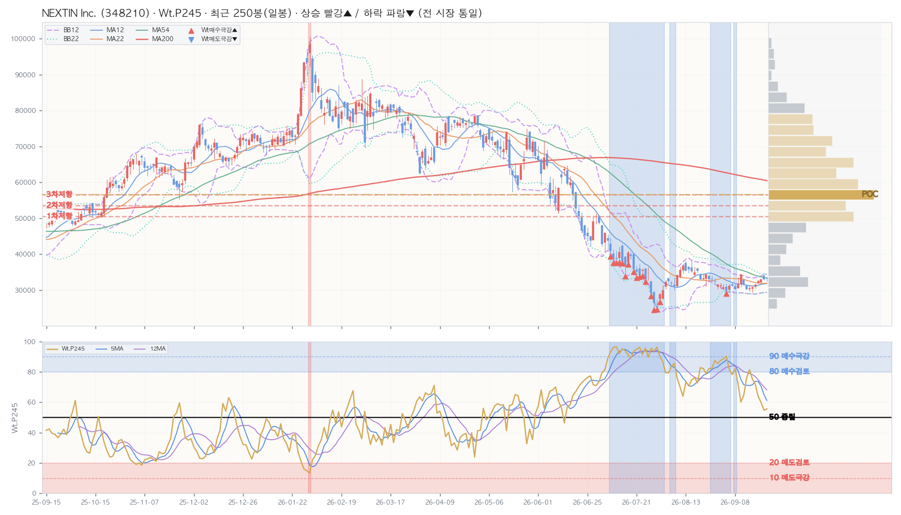

NixStock · Ticker Signal Report · 재구성 · 2026-09-23 · v1.2
NEXTIN Inc. · KR · 정규장 마감
KR TICKER
2026-09-23 (수) · 15:40 KST / 2026-09-23 (수) · 02:40 ET
By Opus 4.8 · Sig=Wt.P245 · 1년(250봉) · BB12
★ 결론 (먼저 읽는 한 줄)
통합 판정 지표 상향 — 뉴스 없음 — 지표만으로 상향 (관점 강도 +92 · −100~+100 · 확률·매매 임계 아님)
실측 요약 — ⚠️ 추세주의 · 매수 비추천 — 구조적 하락추세(200일선 -44.9% 아래·하락기울기) · 매수신호 stale-high(칼날 위험)
WtAll 59(D) / 76(W) / 85(M) — 일 중립 · 주 상승 확률 높음(충분히 저가) · 월 상승 확률 높음(충분히 저가). (Sig 높음=상승 확률↑=저가, 강세/고점 아님)
가격 33,350 · 당일 ▲ +1.06% · 200일선 60,496 · RSI5 69.7 = 중립.
코스닥150 온도 COOL (V1 39.6점 · V2 35.1점) · 시장온도 NEUTRAL 55.8점 (V1 일봉) · V2 47.7 NEUTRAL.
자체 신호 SU31 26.4·SU51 24.0 — 참고값(단기).
⚠️ 추세주의(falling-knife) · 매수 비추천 — 종가 200일선 -44.9% 아래·하락기울기 = 구조적 하락추세. 점등한 매수신호는 stale-high(하락장에 굳은 거짓경보) → 200일선 회복/강엣지 실점등 전까지 매수 보류. · 다음 단계 관찰: 밴드 스퀴즈(변동성 수축) → 돌파 방향 확인 후 진입 (§1 차트·§D 추세하락 필터 상세)
왜? (데이터 → 결론)
★신호 — P가중평균 87.7 (상위) · 왜? high_buy 특성 → 학습대로 — Sig 높음 = 상승확률 높음(충분히 저가). P 상위가 강세 신호. 해석 후 상위
→신호MA — 정배열(신호 자체가 상승추세) · 왜? 신호선 배열 — 신호 자체의 추세(가격 추세와 별개)
→가격MA — 역배열 · 왜? 종가 vs Sma22/54/200 배열 — 가격 추세 축(신호와 별개)
★엣지 — 활성 5건 · 최상 자체 신호 A · 주봉 · h12 · 왜? OOS 엣지 +40.4pp (적중 79.63% vs 기저 48.48%, n=54) 조건이 최신봉에서 성립
→온도 — NEUTRAL (-18.1) · 왜? 시장 레짐 역방향 보정 — 과열이면 매수 관점 하향, 냉각이면 상향(평균회귀 전제)
→⚠️ 주의 — 매핑된 뉴스 없음 — 지표 단독 판정
→⚠️ 추세주의(falling-knife) · 매수 비추천 — 종가 200일선 -44.9% 아래·하락기울기 = 구조적 하락추세. 점등한 매수신호는 stale-high(하락장에 굳은 거짓경보) → 200일선 회복/강엣지 실점등 전까지 매수 보류. · 다음 단계 관찰: 밴드 스퀴즈(변동성 수축) → 돌파 방향 확인 후 진입 (§1 차트·§D 추세하락 필터 상세)
위 7개 합쳐진 결과가 판정.
판정 = 신호·신호MA·가격MA·엣지·온도·뉴스 6축 규칙 결합(LLM 무호출 · 규칙 SSOT v1.0.0 · 기준 2026-09-05). 관점 강도는 축 점수의 합일 뿐 확률도 매매 임계도 아닙니다. 아래 §1~§6·§F·§V·§D 는 이 결론의 근거이고, 맨 끝 §G · 읽는 법(용어·수식·레퍼런스) 에 모든 용어와 산식이 있습니다. 확률적 참고 — 매수/매도 추천 아님.
▶ 해석– 주·월 종합신호 76/85 = 상승 확률 높음(충분히 저가)
– 일봉 RSI5 70 = 단기 중립
– 코스닥150 온도 COOL (V1 39.6점 · V2 35.1점)
– 검증된 매수신호 현재 점등 2개 = 매수 조건 켜짐 ⚠️ 단, 구조적 하락추세 = 점등 신호 stale-high(칼날 위험·매수 보류)

캔들 + BB12(보라 대시)·BB22(청록 점선) + MA12/22/54/200 + Wt.P245 신호선(하단 패널) + 매수(▲)/매도(▼) 마커. Wt.P245 상단선=매도 극강/하단선=매수 극강 기준. 자체 렌더 · 알고리즘 비공개. 우측 회색=매물대(금색=POC)·적점선=저항/청점선=지지.
§1b · 매물대 (Volume Profile · 최근 480봉≈2년 · 25단계)
🎯 POC(최대 거래 가격대) 56,552 (10.7%) · 현재가 위=저항 · 현재가 33,350 기준 위 매물대 93% / 아래 7%
| 레벨 | 가격대 | 현재가 대비 | 거래비중 |
|---|
| ▲ 저항 1차 | 48,992~52,016 | +51.4% | 8.6% |
| ▲ 저항 2차 | 52,016~55,040 | +60.5% | 7.8% |
| ▲ 저항 3차 | 55,040~58,064 | +69.6% | 10.7% |
| ▼ 지지 — | 유효 매물대 없음 |
매물대 = 지난 2년 거래량이 가격대별로 쌓인 곳(가중 High0.1·Low0.1·Open0.3·Close0.5 · 하우스 표준 25단계). 많이 쌓인 곳 = 매물 소화 필요 = 저항/지지로 작동. 1차 = 현재가에서 가장 가까운 매물대. 현재가가 매물대 상단권 → 위 저항 두꺼움(반등 시 매물 소화 부담). 확률적 참고 · 투자자문 아님.
§2 · KPI (D / W / M)
| 지표 | D 일봉 | W 주봉 | M 월봉 |
|---|
| Close | 33,350 | 33,350 | 33,350 |
| Chg% | ▲ +1.06% | ▲ +2.14% | ▲ +5.87% |
| SigNm | 49.8 | 57.7 | 69.4 |
| SigRk | 37.5 | 59.6 | 72.8 |
| PvN2 | 0 | 1 | 1 |
| WtAll | 59 | 76 | 85 |
Close·등락%·SigNm(정규 0~100)·SigRk(랭크)·PvN2(피봇)·WtAll(종합 가중). 상승 빨강▲ / 하락 파랑▼ (전 시장 통일).
§5 · Macro Context
🌡️ 시장 온도 NEUTRAL 55.8점 (V1 일봉) · V2 47.7 NEUTRAL
📉 미 VIX 14.40 (-3.16%) · VKOSPI 미수집 — 별도 브라우저 수집 소스라 market 스냅샷에 없음
🟢 코스피200 113,145 ▲+1.13%
❄️ 코스닥150 온도 COOL (V1 39.6점 · V2 35.1점)
🏷️ 편입 지수 코스닥150 (ticker_set 구성종목 실측)
📈 글로벌 변동성 1년저점권 · SKEW 142.2 · MOVE 81.2
📐 시장 폭 코스닥150 상승 101/150 (67.33%) · NEUTRAL ⚖️
💰 수급(코스피) 외국인 -5,312억 · 기관 +3,226억 · 개인 -14,190억
✅ 온도 일치 확인 — 결론(§판정)이 쓴 시장 온도 등급 NEUTRAL(-18.1℃ · 2026-09-04) = §5 스냅샷 등급 NEUTRAL (척도만 다름: 판정 ℃ · 스냅샷 0~100점)
📊 섹터 상대강도·순환(RRG) vs 코스피200 (069500) — 회복 국면 (상대강도 RS 83·시계 회전=강화·직전 회복)
· 매크로 실값 = market 온도 스냅샷 nix_snapshot_market_temp_kr.json (2026-09-23 · 읽기 전용 크로스 참조)
· 시장 대비 강한지·약해지는지 4국면(강세→둔화→약세→회복). RS 100=시장과 동일·낮을수록 열위
§3 · D/W/M 시그널 추이 — 7101 대시보드 동일 컬럼·순서 (행=날짜 최신순)
📅 D 일봉 (최근 16봉 · .P245 윈도우)
| Perf | | Mac | Tcr.U | Tcr.D | Zc | BBs | PvN2 | Sts | Wt.P245 | SA.P245 | SA02.P245 | S122.P245 | S051.P245 | SU31.P245 | Inds.Sig |
|---|
| | | | | | | | | | | | | | | | SigNm | SigRk |
|---|
| Date | T-Set | H | L | C | V | Chg% | DChg% | YTD | P5 | P12 | P16 | P22 | P54 | P120 | P245 | Cdl | 종합 | 단 | 중 | 장 | 5 | 12 | 22 | 54 | 5 | 12 | 22 | 54 | 12 | 22 | 54 | 12 | 22 | 54 | D | MA_Sts | C_Sts | EMC_Sts | .P | .J | Bar(P) | Ar | .P | .J | Bar(P) | Ar | .P | .J | Bar(P) | Ar | .P | .J | Bar(P) | Ar | .P | .J | Bar(P) | Ar | .P | .J | Bar(P) | Ar | D | D |
|---|
| 2026-09-23 | KQ150 | 33,750 | 32,500 | 33,350 | 29.2K | +1.1 | +0.0 | -54.6 | +8.5 | +6.9 | +6.2 | +0.2 | -18.4 | -46.6 | -35.6 | -11 | 6 | 0 | 7 | 7 | 0.6 | 1.0 | 0.8 | 2.1 | 0.3 | 0.4 | 0.3 | 2.3 | 1.1 | 1.1 | 0.0 | 0 | 0 | 0 | 0 | 🟥🟦🟦🟦🟦🟥🟥🟥 | 🟦🟦🟦🟦🟥🟥🟥🟥 | 🟦🟦🟦🟦🟦🟥🟥🟥 | 55.6 | 🔹 | ███████ | ▼ | 40.0 | 🔸 | █████ | ▼ | 80.6 | 🟦 | ██████████ | ▼ | 39.8 | 🔶 | █████ | ▼ | 72.8 | 🔵 | █████████ | ▼ | 26.4 | 🔴 | ███ | ▼ | 49.8 | 37.5 |
| 2026-09-22 | KQ150 | 34,700 | 32,950 | 33,000 | 60.4K | +0.0 | +1.1 | -55.1 | +7.8 | +5.6 | +4.8 | -0.2 | -24.7 | -51.8 | -34.8 | 8 | 6 | 0 | 7 | 7 | 0.8 | 0.9 | 0.7 | 1.9 | 0.4 | 0.5 | 0.3 | 2.7 | 1.0 | 0.9 | -0.1 | 1.4 | 0.7 | 0 | 0 | 🟥🟦🟦🟦🟦🟦🟥🟥 | 🟦🟦🟦🟦🟦🟥🟥🟥 | 🟦🟦🟦🟦🟦🟥🟥🟥 | 54.7 | 📈 | ███████ | ▼ | 37.9 | 🔶 | ████ | ▼ | 81.3 | 🟦 | ██████████ | ▼ | 37.7 | 🔶 | ████ | ▼ | 73.8 | 🔵 | █████████ | ▼ | 28.6 | 🔴 | ███ | ▼ | 48.8 | 36.9 |
| 2026-09-21 | KQ150 | 33,150 | 32,000 | 33,000 | 31.8K | +1.1 | +1.1 | -55.1 | +8.9 | +10.6 | +2.2 | -6.5 | -28.2 | -54.8 | -33.6 | -2 | 6 | 0 | 7 | 7 | 1.0 | 0.9 | 0.6 | 1.8 | 0.1 | 0.5 | 0.4 | 2.9 | 1.2 | 0.9 | -0.2 | 0 | 0 | 0 | 0 | 🟥🟦🟦🟦🟦🟦🟥🟥 | 🟦🟦🟦🟦🟦🟥🟥🟥 | 🟦🟦🟦🟦🟦🟥🟥🟥 | 59.8 | 🔹 | ███████ | ▼ | 48.0 | 📉 | ██████ | ▼ | 82.1 | 🟦 | ██████████ | ▼ | 47.7 | 📉 | ██████ | ▼ | 75.4 | 🔵 | █████████ | ▼ | 28.3 | 🔴 | ███ | ▼ | 51.2 | 38.5 |
| 2026-09-18 | KQ150 | 32,650 | 31,800 | 32,650 | 51.3K | +3.8 | +2.1 | -55.6 | +3.5 | +6.0 | -1.2 | -6.4 | -23.6 | -56.4 | -33.1 | -2 | 6 | 0 | 7 | 7 | 0.8 | 0.8 | 0.5 | 1.6 | 0.1 | 0.6 | 0.8 | 3.0 | 1.1 | 0.4 | -0.3 | 0 | 0 | 0 | 0 | 🟥🟦🟦🟦🟦🟦🟦🟥 | 🟦🟦🟦🟦🟦🟥🟥🟥 | 🟦🟦🟦🟦🟦🟥🟥🟥 | 63.7 | 🔷 | ████████ | ▼ | 53.5 | 📈 | ██████ | ↔ | 83.3 | 🟦 | ██████████ | ▼ | 53.3 | 📈 | ██████ | ↔ | 77.0 | 🔵 | ██████████ | ▼ | 29.9 | 🔴 | ███ | ▼ | 54.5 | 41.1 |
| 2026-09-17 | KQ150 | 31,750 | 30,600 | 31,450 | 29.8K | +2.3 | +6.0 | -57.2 | -8.7 | +0.2 | -4.7 | -10.7 | -35.6 | -59.8 | -34.6 | -2 | 6 | 0 | 7 | 7 | 0.5 | 0.4 | 0.3 | 1.4 | 0.5 | 0.7 | 0.9 | 3.6 | 0.2 | -0.4 | -0.6 | 0 | 0 | 0 | 0 | 🟥🟦🟦🟦🟦🟦🟦🟥 | 🟦🟦🟦🟦🟦🟦🟥🟥 | 🟦🟦🟦🟦🟦🟦🟥🟥 | 71.7 | 🔵 | █████████ | ▼ | 64.5 | 🔷 | ████████ | ▼ | 84.0 | 🟦 | ██████████ | ↔ | 64.3 | 🔷 | ████████ | ▼ | 79.3 | 🔵 | ██████████ | ↔ | 30.6 | 🟠 | ███ | ▼ | 62.9 | 51.4 |
| 2026-09-16 | KQ150 | 31,000 | 29,450 | 30,750 | 61.6K | +0.5 | +8.5 | -58.2 | -2.8 | -2.4 | -10.6 | -14.1 | -37.7 | -59.5 | -35.1 | 0 | 6 | 0 | 7 | 7 | 0.3 | 0.2 | 0.2 | 1.2 | 0.8 | 0.6 | 1.2 | 4.1 | -0.4 | -0.9 | -0.8 | 0 | 0 | 0 | 0 | 🟥🟦🟦🟦🟦🟦🟥🟦 | 🟦🟦🟦🟦🟦🟦🟦🟦 | 🟦🟦🟦🟦🟦🟦🟦🟦 | 75.1 | 🔵 | █████████ | ↔ | 69.3 | 🔷 | █████████ | ↔ | 85.8 | Ⓜ️ | ███████████ | ↔ | 69.2 | 🔷 | ████████ | ↔ | 80.6 | 🟦 | ██████████ | ↔ | 33.7 | 🟠 | ████ | ▼ | 64.3 | 56.0 |
| 2026-09-15 | KQ150 | 31,300 | 29,750 | 30,600 | 35.6K | +1.0 | +9.0 | -58.4 | +1.2 | -5.3 | -8.1 | -13.3 | -37.7 | -58.5 | -36.2 | -2 | 6 | 0 | 7 | 7 | 0.2 | 0.2 | 0.2 | 1.1 | 0.9 | 0.5 | 1.2 | 3.9 | -0.6 | -1.1 | -0.8 | 0 | 0 | 0 | 0 | 🟥🟦🟦🟦🟦🟦🟥🟦 | 🟦🟦🟦🟦🟦🟦🟦🟦 | 🟦🟦🟦🟦🟦🟦🟦🟦 | 81.3 | 🟦 | ██████████ | ↔ | 80.4 | 🟦 | ██████████ | ↔ | 84.1 | 🟦 | ██████████ | ▼ | 80.2 | 🟦 | ██████████ | ↔ | 78.6 | 🔵 | ██████████ | ▼ | 38.5 | 🔶 | █████ | ▼ | 73.5 | 61.5 |
| 2026-09-14 | KQ150 | 31,250 | 30,100 | 30,300 | 52.7K | -4.0 | +10.1 | -58.8 | -2.9 | -8.3 | -8.3 | -17.9 | -30.8 | -61.8 | -34.2 | -3 | 6 | 0 | 7 | 7 | 0.1 | 0.2 | 0.2 | 1.1 | 0.6 | 0.4 | 1.1 | 3.7 | -0.9 | -1.3 | -0.9 | 0 | 0 | 0 | 0 | 🟥🟦🟦🟦🟦🟦🟥🟦 | 🟦🟦🟦🟦🟦🟦🟦🟦 | 🟦🟦🟦🟦🟦🟦🟦🟦 | 76.2 | 🔵 | █████████ | ↔ | 68.8 | 🔷 | ████████ | ↔ | 81.0 | 🟦 | ██████████ | ▼ | 68.6 | 🔷 | ████████ | ↔ | 76.1 | 🔵 | █████████ | ▼ | 34.8 | 🟠 | ████ | ▼ | 75.5 | 61.3 |
| 2026-09-11 | KQ150 | 33,100 | 31,300 | 31,550 | 153.1K | -8.4 | +5.7 | -57.1 | +1.0 | -4.4 | -10.6 | -11.5 | -30.0 | -60.6 | -31.3 | 5 | 6 | 0 | 7 | 7 | 0.2 | 0.3 | 0.4 | 1.3 | 0.2 | 0.3 | 0.9 | 3.5 | -0.0 | -0.8 | -0.7 | 0 | 0 | 0 | 0 | 🟥🟦🟦🟦🟦🟦🟥🟦 | 🟦🟦🟦🟦🟦🟦🟦🟦 | 🟦🟦🟦🟦🟦🟦🟦🟦 | 64.6 | 🔷 | ████████ | ▼ | 48.3 | 📉 | ██████ | ▼ | 80.7 | 🟦 | ██████████ | ▼ | 48.1 | 📉 | ██████ | ▼ | 78.4 | 🔵 | ██████████ | ▼ | 36.8 | 🔶 | ████ | ▼ | 65.1 | 47.0 |
| 2026-09-10 | KQ150 | 34,450 | 30,900 | 34,450 | 432.5K | +8.8 | -3.2 | -53.1 | +15.4 | +0.1 | -1.3 | +0.4 | -23.9 | -57.4 | -23.8 | -8 | 6 | 0 | 7 | 7 | 0.3 | 0.5 | 0.6 | 1.7 | 0.1 | 0.1 | 0.8 | 3.5 | 2.2 | 0.6 | -0.2 | 0.7 | 0 | 0 | +1 | 🟥🟦🟦🟦🟦🟦🟥🟥 | 🟦🟦🟦🟦🟦🟥🟥🟥 | 🟦🟦🟦🟦🟦🟥🟥🟥 | 60.1 | 🔷 | ███████ | ▼ | 49.6 | 📉 | ██████ | ▼ | 85.4 | Ⓜ️ | ███████████ | ▼ | 49.5 | 📉 | ██████ | ▼ | 86.0 | Ⓜ️ | ███████████ | ▼ | 40.6 | 🔸 | █████ | ▼ | 46.6 | 34.5 |
| 2026-09-09 | KQ150 | 33,550 | 30,600 | 31,650 | 192.9K | +4.6 | +5.4 | -56.9 | +2.8 | -5.0 | -10.1 | +1.9 | -32.0 | -60.2 | -29.3 | -7 | 7 | 7 | 7 | 7 | 0.2 | 0.3 | 0.3 | 1.3 | 0.3 | 0.5 | 1.4 | 4.1 | -0.1 | -0.8 | -0.7 | 0 | 0 | 0 | 0 | 🟥🟦🟦🟦🟦🟦🟦🟥 | 🟦🟦🟦🟦🟦🟦🟦🟥 | 🟦🟦🟦🟦🟦🟦🟦🟥 | 72.6 | 🔵 | █████████ | ▼ | 65.8 | 🔷 | ████████ | ▼ | 90.1 | 🅿️ | ███████████ | ▼ | 65.7 | 🔷 | ████████ | ▼ | 90.3 | 🅿️ | ███████████ | ▼ | 50.6 | 📈 | ██████ | ▼ | 57.5 | 46.4 |
| 2026-09-08 | KQ150 | 31,600 | 30,250 | 30,250 | 107.5K | -3.0 | +10.2 | -58.8 | -3.7 | -8.5 | -15.5 | -5.0 | -40.2 | -62.7 | -30.1 | 11 | 7 | 7 | 7 | 7 | 0.3 | 0.2 | 0.2 | 1.2 | 0.5 | 0.8 | 1.8 | 4.5 | -1.2 | -1.4 | -1.0 | 0 | 0 | 0 | 0 | 🟥🟦🟦🟦🟦🟦🟦🟦 | 🟦🟦🟦🟦🟦🟦🟦🟦 | 🟦🟦🟦🟦🟦🟦🟦🟦 | 82.1 | 🟦 | ██████████ | ↔ | 72.7 | 🔵 | █████████ | ↔ | 92.6 | 🅿️ | ████████████ | ▼ | 72.6 | 🔵 | █████████ | ↔ | 92.9 | 🅿️ | ████████████ | ▼ | 53.0 | 📈 | ██████ | ▼ | 75.4 | 61.9 |
| 2026-09-07 | KQ150 | 32,350 | 31,100 | 31,200 | 95.7K | -0.2 | +6.9 | -57.6 | -1.0 | -11.6 | -11.6 | -3.7 | -40.8 | -60.8 | -26.0 | 5 | 7 | 7 | 7 | 7 | 0.3 | 0.3 | 0.3 | 1.3 | 0.3 | 0.7 | 1.5 | 4.5 | -0.7 | -1.1 | -0.9 | 0 | 0 | 0 | 0 | 🟥🟦🟦🟦🟦🟦🟦🟥 | 🟦🟦🟦🟦🟦🟦🟦🟥 | 🟦🟦🟦🟦🟦🟦🟦🟥 | 78.2 | 🔵 | ██████████ | ↔ | 70.6 | 🔵 | █████████ | ↔ | 94.2 | 🅿️ | ████████████ | ▼ | 70.5 | 🔵 | █████████ | ↔ | 93.4 | 🅿️ | ████████████ | ▼ | 58.9 | 🔹 | ███████ | ▼ | 61.5 | 55.4 |
| 2026-09-04 | KQ150 | 31,650 | 29,600 | 31,250 | 90.4K | +4.7 | +6.7 | -57.5 | -3.3 | -10.5 | -15.3 | -3.3 | -44.7 | -61.7 | -24.7 | -5 | 7 | 7 | 7 | 7 | 0.2 | 0.3 | 0.3 | 1.2 | 0.2 | 0.9 | 1.5 | 5.1 | -0.8 | -1.1 | -0.9 | 0 | 0 | 0 | 0 | 🟥🟦🟦🟦🟦🟦🟦🟥 | 🟦🟦🟦🟦🟦🟦🟦🟥 | 🟦🟦🟦🟦🟦🟦🟦🟥 | 81.5 | 🟦 | ██████████ | ↔ | 76.4 | 🔵 | █████████ | ↔ | 95.0 | ✅ | ████████████ | ▲ | 76.3 | 🔵 | █████████ | ↔ | 94.0 | 🅿️ | ████████████ | ▼ | 61.7 | 🔷 | ████████ | ▼ | 64.0 | 56.8 |
| 2026-09-03 | KQ150 | 31,800 | 29,500 | 29,850 | 75.0K | -3.1 | +11.7 | -59.4 | -9.7 | -15.2 | -16.3 | -0.7 | -50.2 | -63.1 | -27.2 | 10 | 7 | 7 | 7 | 7 | 0.1 | 0.1 | 0.1 | 1.0 | 0.5 | 1.2 | 1.6 | 5.5 | -1.8 | -1.9 | -1.1 | -0.2 | -0.4 | 0 | -2 | 🟥🟦🟦🟦🟦🟦🟦🟦 | 🟦🟦🟦🟦🟦🟦🟦🟦 | 🟦🟦🟦🟦🟦🟦🟦🟦 | 90.2 | 🅿️ | ███████████ | ▲ | 86.7 | Ⓜ️ | ███████████ | ▲ | 95.3 | ✅ | ████████████ | ▲ | 86.6 | Ⓜ️ | ███████████ | ▲ | 94.4 | 🅿️ | ████████████ | ▼ | 65.0 | 🔷 | ████████ | ▼ | 81.6 | 71.6 |
| 2026-09-02 | KQ150 | 31,700 | 30,150 | 30,800 | 48.5K | -1.9 | +8.3 | -58.1 | -6.7 | -14.0 | -10.2 | +6.8 | -48.4 | -62.5 | -27.6 | 0 | 7 | 7 | 7 | 7 | 0.2 | 0.2 | 0.8 | 1.1 | 0.6 | 1.6 | 1.6 | 5.3 | -1.6 | -1.4 | -0.9 | -0.4 | 0 | 0 | -1 | 🟥🟦🟦🟦🟦🟦🟦🟦 | 🟦🟦🟦🟦🟦🟦🟦🟦 | 🟦🟦🟦🟦🟦🟦🟦🟦 | 88.6 | Ⓜ️ | ███████████ | ▲ | 83.8 | 🟦 | ██████████ | ▲ | 94.7 | 🅿️ | ████████████ | ↔ | 83.7 | 🟦 | ██████████ | ▲ | 94.5 | 🅿️ | ████████████ | ▼ | 66.1 | 🔷 | ████████ | ▼ | 80.2 | 70.4 |
📊 W 주봉 (최근 12봉 · .P54 윈도우)
| Perf | | Mac | Tcr.U | Tcr.D | Zc | BBs | PvN2 | Sts | Wt.P54 | SA.P54 | SA02.P54 | S122.P54 | S051.P54 | SU31.P54 | Inds.Sig |
|---|
| | | | | | | | | | | | | | | | SigNm | SigRk |
|---|
| Date | T-Set | H | L | C | V | Chg% | DChg% | YTD | P1 | P3 | P5 | P8 | P12 | P16 | P22 | P54 | Cdl | 종합 | 단 | 중 | 장 | 5 | 12 | 22 | 54 | 5 | 12 | 22 | 54 | 12 | 22 | 54 | 12 | 22 | 54 | W | MA_Sts | C_Sts | EMC_Sts | .P | .J | Bar(P) | Ar | .P | .J | Bar(P) | Ar | .P | .J | Bar(P) | Ar | .P | .J | Bar(P) | Ar | .P | .J | Bar(P) | Ar | .P | .J | Bar(P) | Ar | W | W |
|---|
| 2026-09-23 | KQ150 | 34,700 | 32,000 | 33,350 | 121.4K | +2.1 | +0.0 | -54.6 | +2.1 | +6.7 | +0.9 | +15.6 | -27.4 | -48.4 | -56.2 | -29.6 | -10 | -9 | -7 | -11 | 0 | 0.4 | 1.1 | 0.7 | 0.4 | 0.2 | 1.7 | 4.0 | 3.0 | -0.1 | -0.8 | -1.5 | 0 | 0 | 0 | +1 | 🟦🟥🟥🟦🟦🟦🟦🟥 | 🟦🟦🟦🟦🟦🟦🟦🟥 | 🟦🟦🟦🟦🟦🟦🟦🟥 | 66.9 | 🔷 | ████████ | ▼ | 70.7 | 🔵 | █████████ | ▼ | 64.3 | 🔷 | ████████ | ▼ | 61.4 | 🔷 | ███████ | ▼ | | ➖ | | – | 66.4 | 🔷 | ████████ | ↔ | 57.7 | 59.6 |
| 2026-09-18 | KQ150 | 32,650 | 29,450 | 32,650 | 231.0K | +3.5 | +2.1 | -55.6 | +3.5 | +1.1 | -8.8 | -1.2 | -25.5 | -51.6 | -57.4 | -27.0 | -10 | -9 | -7 | -11 | 0 | 0.3 | 0.8 | 0.6 | 0.3 | 0.6 | 2.1 | 3.5 | 2.9 | -0.4 | -0.9 | -1.6 | 0 | 0 | 0 | 0 | 🟦🟥🟥🟦🟦🟦🟦🟥 | 🟦🟦🟦🟦🟦🟦🟦🟥 | 🟦🟦🟦🟦🟦🟦🟦🟥 | 67.5 | 🔷 | ████████ | ▼ | 74.2 | 🔵 | █████████ | ▼ | 56.4 | 🔹 | ███████ | ▼ | 59.1 | 🔹 | ███████ | ▼ | | ➖ | | – | 55.7 | 🔹 | ███████ | ▼ | 62.8 | 66.4 |
| 2026-09-11 | KQ150 | 34,450 | 30,250 | 31,550 | 981.6K | +1.0 | +5.7 | -57.1 | +1.0 | -4.5 | +1.6 | -20.1 | -40.1 | -52.6 | -56.5 | -25.9 | -7 | -9 | -7 | -11 | 0 | 0.2 | 0.6 | 0.5 | 0.3 | 0.7 | 2.0 | 3.2 | 2.8 | -0.8 | -1.1 | -1.7 | 0 | 0 | 0 | 0 | 🟦🟥🟥🟦🟦🟦🟦🟦 | 🟦🟦🟦🟦🟦🟦🟦🟦 | 🟦🟦🟦🟦🟦🟦🟦🟦 | 70.8 | 🔵 | █████████ | ▼ | 80.9 | 🟦 | ██████████ | ▼ | 57.5 | 🔹 | ███████ | ▼ | 66.2 | 🔷 | ████████ | ▼ | | ➖ | | – | 55.1 | 🔹 | ███████ | ▼ | 64.2 | 66.6 |
| 2026-09-04 | KQ150 | 31,950 | 29,500 | 31,250 | 340.3K | -3.3 | +6.7 | -57.5 | -3.3 | -12.7 | +8.3 | -23.0 | -49.1 | -51.2 | -52.7 | -25.6 | -11 | -9 | -7 | -11 | 0 | 0.6 | 0.6 | 0.4 | 0.3 | 0.9 | 2.9 | 2.8 | 2.7 | -0.9 | -1.2 | -1.8 | 0 | 0 | 0 | 0 | 🟦🟥🟥🟦🟦🟦🟦🟦 | 🟦🟦🟦🟦🟦🟦🟦🟦 | 🟦🟦🟦🟦🟦🟦🟦🟦 | 81.0 | 🟦 | ██████████ | ▼ | 89.1 | Ⓜ️ | ███████████ | ↔ | 67.6 | 🔷 | ████████ | ▼ | 88.1 | Ⓜ️ | ███████████ | ↔ | | ➖ | | – | 65.7 | 🔷 | ████████ | ▼ | 78.7 | 75.3 |
| 2026-08-28 | KQ150 | 34,400 | 31,100 | 32,300 | 204.0K | -2.3 | +3.2 | -56.1 | -2.3 | +4.0 | -2.3 | -29.7 | -50.0 | -54.6 | -55.8 | -31.9 | 0 | -9 | -7 | -11 | 0 | 0.7 | 0.5 | 0.4 | 0.3 | 0.5 | 1.9 | 2.3 | 2.4 | -0.8 | -1.3 | -1.8 | 0 | 0 | 0 | 0 | 🟦🟦🟥🟥🟦🟦🟦🟥 | 🟦🟦🟦🟦🟦🟦🟦🟥 | 🟦🟦🟦🟦🟦🟦🟦🟦 | 87.5 | Ⓜ️ | ███████████ | ▼ | 88.5 | Ⓜ️ | ███████████ | ↔ | 85.3 | Ⓜ️ | ███████████ | ▼ | 91.5 | 🅿️ | ███████████ | ↔ | | ➖ | | – | 83.9 | 🟦 | ██████████ | ▼ | 78.9 | 76.9 |
| 2026-08-21 | KQ150 | 38,450 | 33,000 | 33,050 | 252.7K | -7.7 | +0.9 | -55.0 | -7.7 | +14.6 | -16.3 | -24.5 | -51.0 | -52.6 | -58.4 | -31.9 | 2 | -9 | -7 | -11 | 0 | 0.5 | 0.4 | 0.4 | 0.3 | 0.4 | 1.9 | 1.9 | 2.3 | -0.8 | -1.4 | -1.8 | 0 | 0 | 0 | 0 | 🟦🟦🟥🟥🟦🟦🟦🟥 | 🟦🟦🟦🟦🟦🟦🟦🟥 | 🟦🟦🟦🟦🟦🟦🟦🟦 | 86.0 | Ⓜ️ | ███████████ | ▼ | 80.4 | 🟦 | ██████████ | ↔ | 94.3 | 🅿️ | ████████████ | ▼ | 78.6 | 🔵 | ██████████ | ▼ | | ➖ | | – | 94.2 | 🅿️ | ████████████ | ▼ | 69.3 | 73.3 |
| 2026-08-14 | KQ150 | 38,000 | 31,050 | 35,800 | 414.4K | +15.3 | -6.8 | -51.3 | +15.3 | +8.3 | -11.8 | -32.1 | -46.2 | -53.0 | -55.0 | -21.9 | 3 | -9 | -7 | -11 | 0 | 0.5 | 0.4 | 0.3 | 0.3 | 0.5 | 1.8 | 1.7 | 2.2 | -0.8 | -1.3 | -1.7 | 0 | 0 | 0 | 0 | 🟦🟦🟥🟥🟦🟦🟦🟥 | 🟦🟦🟦🟦🟦🟦🟦🟥 | 🟦🟦🟦🟦🟦🟦🟦🟥 | 84.3 | 🟦 | ██████████ | ↔ | 79.4 | 🔵 | ██████████ | ↔ | 96.0 | ✅ | ████████████ | ↔ | 61.1 | 🔷 | ███████ | ↔ | | ➖ | | – | 95.9 | ✅ | ████████████ | ↔ | 63.1 | 66.5 |
| 2026-08-07 | KQ150 | 33,500 | 27,500 | 31,050 | 386.6K | +7.6 | +7.4 | -57.8 | +7.6 | -21.4 | -32.4 | -49.4 | -51.6 | -59.5 | -63.3 | -31.9 | -2 | -9 | -7 | -11 | 0 | 0.3 | 0.3 | 0.2 | 0.2 | 0.6 | 1.9 | 1.8 | 2.2 | -1.2 | -1.7 | -2.0 | 0 | 0 | -12.2 | 0 | 🟦🟦🟥🟥🟦🟦🟦🟦 | 🟦🟦🟦🟦🟦🟦🟦🟦 | 🟦🟦🟦🟦🟦🟦🟦🟦 | 91.6 | 🅿️ | ███████████ | ↔ | 89.4 | Ⓜ️ | ███████████ | ↔ | 96.7 | ✅ | ████████████ | ↔ | 76.2 | 🔵 | █████████ | ↔ | | ➖ | | – | 96.5 | ✅ | ████████████ | ↔ | 75.1 | 79.3 |
| 2026-07-31 | KQ150 | 36,300 | 24,800 | 28,850 | 639.1K | -12.7 | +15.6 | -60.7 | -12.7 | -28.9 | -34.1 | -55.3 | -59.5 | -60.3 | -64.9 | -39.8 | 0 | -9 | -7 | -11 | 0 | 0.2 | 0.2 | 0.2 | 0.2 | 0.7 | 1.6 | 1.8 | 2.1 | -1.6 | -2.1 | -2.2 | 0 | -17.0 | -23.6 | -10 | 🟦🟦🟥🟥🟦🟦🟦🟦 | 🟦🟦🟦🟦🟦🟦🟦🟦 | 🟦🟦🟦🟦🟦🟦🟦🟦 | 95.7 | ✅ | ████████████ | ▲ | 94.9 | 🅿️ | ████████████ | ▲ | 97.5 | ✅ | ████████████ | ↔ | 92.6 | 🅿️ | ████████████ | ▲ | | ➖ | | – | 97.2 | ✅ | ████████████ | ↔ | 88.3 | 83.4 |
| 2026-07-24 | KQ150 | 40,000 | 32,850 | 33,050 | 338.0K | -16.3 | +0.9 | -55.0 | -16.3 | -28.1 | -37.3 | -51.0 | -52.6 | -49.9 | -59.1 | -32.6 | 11 | -11 | -7 | -11 | -7 | 0.1 | 0.1 | 0.1 | 0.1 | 0.8 | 1.6 | 1.7 | 1.8 | -1.7 | -2.1 | -2.1 | 0 | -5.1 | -3.3 | -10 | 🟦🟥🟥🟥🟦🟦🟦🟦 | 🟦🟦🟦🟦🟦🟦🟦🟦 | 🟦🟦🟦🟦🟦🟦🟦🟦 | 96.5 | ✅ | ████████████ | ▲ | 95.3 | ✅ | ████████████ | ▲ | 98.2 | ✅ | ████████████ | ↔ | 93.7 | 🅿️ | ████████████ | ▲ | | ➖ | | – | 97.9 | ✅ | ████████████ | ↔ | 91.1 | 89.0 |
| 2026-07-16 | KQ150 | 42,650 | 34,350 | 39,500 | 376.1K | -2.7 | -15.6 | -46.3 | -2.7 | -9.8 | -35.7 | -40.6 | -48.2 | -45.9 | -47.4 | -21.2 | -6 | -11 | -7 | -11 | -7 | 0.3 | 0.2 | 0.2 | 0.2 | 1.0 | 1.3 | 1.5 | 1.7 | -1.6 | -2.0 | -1.7 | -0.0 | -12.7 | -2.3 | -10 | 🟦🟥🟥🟥🟦🟦🟦🟦 | 🟦🟦🟦🟦🟦🟦🟦🟦 | 🟦🟦🟦🟦🟦🟦🟦🟦 | 96.3 | ✅ | ████████████ | ▲ | 95.0 | ✅ | ████████████ | ▲ | 98.6 | ✅ | ████████████ | ↔ | 95.3 | ✅ | ████████████ | ▲ | | ➖ | | – | 98.4 | ✅ | ████████████ | ↔ | 86.7 | 85.3 |
| 2026-07-10 | KQ150 | 45,500 | 38,100 | 40,600 | 469.6K | -11.6 | -17.9 | -44.8 | -11.6 | -23.0 | -37.2 | -36.7 | -47.1 | -48.9 | -48.8 | -19.8 | 2 | -11 | -7 | -11 | -7 | 0.2 | 0.1 | 0.1 | 0.1 | 0.9 | 1.1 | 1.4 | 1.6 | -1.8 | -2.2 | -1.6 | 0 | -12.3 | 0 | -10 | 🟦🟥🟥🟥🟦🟦🟦🟦 | 🟦🟦🟦🟦🟦🟦🟦🟦 | 🟦🟦🟦🟦🟦🟦🟦🟦 | 95.4 | ✅ | ████████████ | ▲ | 93.0 | 🅿️ | ████████████ | ▲ | 98.6 | ✅ | ████████████ | ▲ | 90.6 | 🅿️ | ███████████ | ▲ | | ➖ | | – | 98.3 | ✅ | ████████████ | ↔ | 84.3 | 86.1 |
📆 M 월봉 (최근 10봉 · .P36 윈도우)
| Perf | | Mac | Tcr.U | Tcr.D | Zc | BBs | PvN2 | Sts | Wt.P36 | SigNm.P36 | SigRk.P36 | Inds.Sig |
|---|
| | | | | | | | | | | | | SigNm | SigRk |
|---|
| Date | T-Set | H | L | C | V | Chg% | DChg% | YTD | P1 | P3 | P6 | P12 | P24 | P36 | Cdl | 종합 | 단 | 중 | 장 | 5 | 12 | 22 | 5 | 12 | 22 | 12 | 22 | 12 | 22 | M | MA_Sts | C_Sts | EMC_Sts | .P | .J | Bar(P) | Ar | .P | .J | Bar(P) | Ar | .P | .J | Bar(P) | Ar | M | M |
|---|
| 2026-09-23 | KQ150 | 34,700 | 29,450 | 33,350 | 1.6M | +5.9 | +0.0 | -66.1 | +5.9 | -32.4 | -46.6 | -32.6 | -36.5 | -46.7 | -2 | -4 | 0 | -9 | 0 | 0.5 | 0.2 | 0.1 | 2.4 | 1.4 | 1.1 | -1.3 | -1.4 | 0 | 0 | +1 | 🟦🟥🟥🟦🟦🟦🟥🟥 | 🟦🟦🟦🟦🟦🟦🟥🟥 | 🟦🟦🟦🟦🟦🟦🟦🟦 | 75.1 | 🔵 | █████████ | ↔ | 76.6 | 🔵 | █████████ | ↔ | 71.8 | 🔵 | █████████ | ▲ | 69.4 | 72.8 |
| 2026-08-31 | KQ150 | 38,450 | 27,500 | 31,500 | 1.3M | +9.2 | +5.9 | -68.0 | +9.2 | -53.3 | -61.7 | -26.0 | -34.6 | -61.3 | 0 | -3 | 7 | -9 | 0 | 0.2 | 0.1 | 0.1 | 0.9 | 1.1 | 1.0 | -1.6 | -1.7 | 0 | 0 | 0 | 🟦🟥🟥🟥🟦🟦🟦🟥 | 🟦🟦🟦🟦🟦🟦🟦🟥 | 🟦🟦🟦🟦🟦🟦🟦🟦 | 90.1 | 🅿️ | ███████████ | ▲ | 91.3 | 🅿️ | ███████████ | ▲ | 87.4 | Ⓜ️ | ███████████ | ▲ | 81.7 | 85.8 |
| 2026-07-31 | KQ150 | 51,000 | 24,800 | 28,850 | 2.1M | -41.5 | +15.6 | -70.7 | -41.5 | -58.6 | -70.7 | -39.2 | -48.5 | -66.3 | 11 | -3 | 7 | -9 | 0 | 0.2 | 0.2 | 0.2 | 0.6 | 0.9 | 0.9 | -1.9 | -2.1 | -9.8 | -19.1 | -9 | 🟦🟥🟥🟥🟦🟦🟦🟦 | 🟦🟦🟦🟦🟦🟦🟦🟦 | 🟦🟦🟦🟦🟦🟦🟦🟦 | 92.2 | 🅿️ | ███████████ | ▲ | 94.2 | 🅿️ | ████████████ | ▲ | 87.7 | Ⓜ️ | ███████████ | ▲ | 84.3 | 84.6 |
| 2026-06-30 | KQ150 | 71,300 | 42,250 | 49,350 | 3.0M | -26.8 | -32.4 | -49.9 | -26.8 | -21.0 | -31.4 | -2.7 | -29.0 | -35.2 | 0 | -3 | 7 | -9 | 0 | 0.2 | 0.2 | 0.2 | 0.5 | 0.6 | 0.7 | -1.0 | -0.8 | 0 | 0 | -3 | 🟦🟥🟥🟥🟦🟦🟦🟦 | 🟦🟦🟦🟦🟦🟦🟦🟦 | 🟦🟦🟦🟦🟦🟦🟦🟦 | 79.3 | 🔵 | ██████████ | ▲ | 85.5 | Ⓜ️ | ███████████ | ▲ | 64.9 | 🔷 | ████████ | – | 72.4 | 64.4 |
| 2026-05-29 | KQ150 | 75,000 | 57,500 | 67,400 | 2.0M | -3.3 | -50.5 | -31.6 | -3.3 | -18.1 | +2.7 | +26.0 | +2.4 | -10.1 | -3 | -3 | 7 | -9 | 0 | 0.2 | 0.4 | 0.5 | 0.7 | 0.5 | 0.5 | 0.2 | 0.6 | 0 | 0 | 0 | 🟦🟥🟥🟥🟥🟦🟥🟦 | 🟥🟥🟥🟥🟦🟦🟥🟦 | 🟥🟥🟥🟥🟦🟦🟦🟦 | 53.3 | 📈 | ██████ | ↔ | 57.8 | 🔹 | ███████ | ↔ | 42.7 | 🔸 | █████ | – | 52.9 | 48.8 |
| 2026-04-30 | KQ150 | 79,000 | 63,700 | 69,700 | 1.9M | +11.5 | -52.2 | -29.2 | +11.5 | -29.2 | +5.8 | +30.0 | +5.6 | +8.1 | -8 | -3 | 7 | -9 | 0 | 0.1 | 0.4 | 0.5 | 0.5 | 0.4 | 0.5 | 0.4 | 0.8 | 0 | 0 | 0 | 🟦🟥🟥🟥🟥🟦🟦🟥 | 🟥🟥🟥🟥🟥🟦🟦🟥 | 🟥🟥🟥🟥🟥🟦🟦🟦 | 52.1 | 📈 | ██████ | ↔ | 57.3 | 🔹 | ███████ | ↔ | 39.9 | 🔶 | █████ | – | 51.7 | 45.8 |
| 2026-03-31 | KQ150 | 88,800 | 62,400 | 62,500 | 2.1M | -24.1 | -46.6 | -36.5 | -24.1 | -13.1 | +26.3 | +9.3 | -12.6 | -6.0 | 3 | -3 | 7 | -9 | 0 | 0.2 | 0.4 | 0.5 | 0.4 | 0.4 | 0.6 | 0.0 | 0.2 | 0 | 5.1 | -2 | 🟦🟥🟥🟥🟥🟥🟦🟦 | 🟦🟥🟥🟥🟦🟦🟦🟦 | 🟥🟦🟦🟦🟦🟦🟦🟦 | 53.6 | 📈 | ██████ | ↔ | 61.0 | 🔷 | ███████ | ↔ | 36.3 | 🔶 | ████ | – | 53.2 | 42.6 |
| 2026-02-27 | KQ150 | 95,300 | 74,600 | 82,300 | 2.0M | -16.4 | -59.5 | -16.4 | -16.4 | +25.5 | +93.4 | +64.9 | +8.0 | +36.7 | 7 | -3 | 7 | -9 | 0 | 0.4 | 0.7 | 0.9 | 0.2 | 0.2 | 0.3 | 1.3 | 1.8 | 2.8 | 12.5 | 0 | 🟦🟥🟥🟥🟥🟥🟥🟦 | 🟥🟥🟥🟥🟥🟥🟦🟦 | 🟥🟥🟥🟥🟥🟥🟦🟦 | 25.1 | 🔴 | ███ | ↔ | 29.6 | 🔴 | ███ | ↔ | 14.7 | 🆘 | █ | – | 33.9 | 22.7 |
| 2026-01-30 | KQ150 | 100,400 | 67,700 | 98,500 | 2.1M | +37.0 | -66.1 | +0.0 | +37.0 | +49.5 | +107.6 | +71.0 | +36.6 | +97.8 | 0 | -3 | 7 | -9 | 0 | 0.6 | 0.8 | 1.2 | 0.2 | 0.2 | 0.3 | 2.7 | 3.4 | 14.3 | 22.2 | +10 | 🟦🟦🟥🟥🟥🟥🟥🟥 | 🟥🟥🟥🟥🟥🟥🟥🟥 | 🟥🟥🟥🟥🟥🟥🟥🟥 | 5.1 | 🚫 | | ▼ | 5.0 | 🚫 | | ▼ | 5.3 | 🚫 | | – | 8.6 | 7.6 |
| 2025-12-30 | KQ150 | 76,600 | 64,600 | 71,900 | 2.5M | +9.6 | -53.6 | +24.8 | +9.6 | +45.3 | +41.8 | +40.7 | +3.6 | +44.2 | -7 | -1 | -1 | -2 | 0 | 0.8 | 0.7 | 0.9 | 0.2 | 0.2 | 0.3 | 2.0 | 1.7 | 6.5 | 3.0 | +6 | 🟦🟦🟦🟥🟥🟥🟥🟥 | 🟥🟥🟥🟥🟥🟥🟥🟥 | 🟥🟥🟥🟥🟥🟥🟥🟥 | 6.2 | 🚫 | | ▼ | 6.9 | 🚫 | | ▼ | 4.5 | ⛔ | | – | 14.8 | 8.9 |
7101 Ticker Signal Report D/W/M 탭 동일 컬럼·순서 (render_perticker_ts_table 재사용).
· 기본 컬럼 — T-Set, OHLC(H/L/C/V), Chg%, DChg%, YTD, Perf
· 지표 컬럼 — Cdl, Mac, Tcr.U, Tcr.D, Zc, BBs, PvN2, Sts
· P-family 블록 — Wt.P, SA.P, SA02.P, S122.P, S051.P, SU31.P, Inds.Sig(SigNm/SigRk)
· 표기 — .P=밴드칩, Sts=이모지 바, 상승 빨강▲ / 하락 파랑▼ (전 시장 통일)
· 조작 — 컬럼 클릭=정렬, ⬅➡ 가로 스크롤
· 산식·모델은 비공개(이름·값·판정만 공개)
§3b · RS/RRG 상대강도·순환 — 6TF 컴포짓 (이번 세션 로직)
개선 (지연→개선·D-56)RS 82.5 · Mom 103.9
6TF개개개개지개
흐름 ▲ 좋아짐 4/6
RS5 추세(6봉) ▲ +1.0
벤치 코스피200 (069500) 대비 6TF(5·12·22·54·120·245봉) 롤링 z-정규 상대강도·모멘텀 → 컴포짓 사분면(L 리딩·I 개선·W 둔화·G 지연)·회전. 10봉 단기 RRG 는 §5 참조. as-of 2026-09-23 · RS/RRG 단독 edge≈0 → 1000+지표 ML 조합(Wt/SA/lgbm) 컨텍스트용.
§D · 현재 방향 확률 — 활성 엣지 적용 (실전 산출물 · 2026-09-23 종가 · 엣지 DB 조회)
🎯 현재값(일봉): Wt.P245 55.6 · SA02.P245 80.6 · S051.P245 72.8 · SU31.P245 26.4 · SA.P245 40 · RSI22 47.7
① 지표 시그널 (활성 엣지 2개·BH 통과 0개·edge 가중): 상승 63% / 하락 37% · 기저 48% · 기저대비 +15pp · 상승우위
② 추세하락 필터 (falling-knife·h22·5MA): 📉 반등확률 69% (기저 19.5%) · ⚠️ 낙폭위험 30% (기저 37.9%) · 반등후보(통과)
💡 읽는 법: 지금 사면 약 1개월(22거래일) 안에 — 5일평균가가 +10% 오를 확률 69%(하락장 평균 19.5%의 3.5배 = 오를 가능성 높음), 그 사이 −5% 넘게 빠질 확률 30%(평균 37.9%의 0.8배 = 손실 위험 낮음). → 오를 확률·손실 위험 종합 = 반등후보(통과). 확률적 참고일 뿐 100% 아님.
📚 근거(전수조사 백테스트·h22·5MA): KR 3498종·하락장 3,543,886 이벤트 · 반등 OOS AUC 0.728·낙폭위험 OOS AUC 0.698(2025-01-01~ 홀드아웃) · 이 종목 반등 68.9%(기저 19.5%·3.5배)·낙폭위험 29.5%(기저 37.9%·0.8배). 포인트엣지 S051.P·SA02.P高+깊은낙폭=반등 / weight SA.P高·얕은낙폭=칼날.
③ 차트 구조 (§1 BB12·BB22): 하단(하락) band-walk → 박스권 안정 (스퀴즈 진행 중·밴드폭 하위 25%) · BB22 스퀴즈 동반 (%B 0.78 · 밴드폭 25%ile)
박스권 안정(band-walk 종료) · 다음 단계 관찰: 밴드 스퀴즈(변동성 수축) → 돌파 방향 확인 후 진입
| 활성 엣지{tf} | 트리거 | 기간 | 방향 | 상승확률(하한) | 신뢰도 | OOS | 전체 edge | q(BH) |
|---|
| 🔔 SigNm.P24 {월봉} ≡동일 2 | ≥60 → 현재 73.2 (여유 +13.2) | h6 | 높을때매수 | 65.2% (높음) ↓31% | 신뢰도 낮음 | +14pp | +17pp | ✗1.0 |
| 🔔 Wt.P12 {주봉} | ≤11.5 → 현재 8.3 (여유 +3.2) | h3 | 낮을때매수 | 60.9% (높음) ↓33% | 신뢰도 중간 | +2pp | +13pp | ✗1.0 |
산출: ①현재 지표값(일/주/월) → ②활성 엣지(현재값이 검증된 매수 트리거를 켰나·grade strong/ok·period·tf 매칭) → ③활성 엣지 적중률 edge 가중 종합 상승% → ④판정(기저 ±3pp). 활성 엣지 없으면 관망. Sig 높음 = 상승 확률 높음 = 충분히 저가. §V(엣지 찾기)와 분리 — §V=엣지 집합, §D=지금 어느 엣지 켜졌나. ⭐ 활성 엣지는 동치 병합(≡동일) 후 집계 — 같은 신호가 2행이면 가중이 이중 계상된다. 정렬은 OOS 우선. q(BH) ✅ = 탐색 조합수 9,967개 기준 Benjamini–Hochberg FDR Q=0.10 통과 · ✗ = 이 탐색 규모에선 우연과 구분 안 됨(§V 탐색 규모 공시 참조). 재생성 시 그날 값으로 재산출. 엣지 DB(MySQL) 조회·데이터: 348210 일/주/월봉·무 look-ahead·확률적 참고(투자자문 아님).
§V · 엣지 검증 — 이 티커의 어느 지표{period·tf}가 엣지 있나 (6축 최적해·OOS·다중검정 보정)
🎯 348210 엣지 프로파일: 혼합(높을때·낮을때 매수 엣지 공존) — 높을때매수 25·낮을때매수 12·양극단 2·noise 0 · 유효 독립 엣지 40개(일 23·주 16·월 1 · 동치 1행 병합) · BH 통과 5개 · 전부 다르다·티커 최적화최적 엣지(OOS 기준 상위 6 · 6축 탐색):Rsi22{일봉} ≤32 h22 OOS +52pp (전체 +48pp · 적중 96%↓73% · 신호수익 +21.8%(기저 +1.5%·초과 +20.3%) · neff 14 · q ✗)
SA02.P245{일봉} ≥92.5 h54 OOS +50pp (전체 +45pp · 적중 94%↓77% · 신호수익 +17.1%(기저 +3.9%·초과 +13.1%) · neff 22 · q ✅0.064)
SA02.P120{일봉} ≥95 h54 OOS +45pp (전체 +45pp · 적중 95%↓76% · 신호수익 +20.2%(기저 +3.9%·초과 +16.3%) · neff 20 · q ✅0.064)
S051.P120{일봉} ≥95 h54 OOS +45pp (전체 +42pp · 적중 92%↓68% · 신호수익 +18.7%(기저 +3.9%·초과 +14.8%) · neff 15 · q ✗)
SA02.P+SA02.arrUp120{일봉} ≥95 h54 OOS +41pp (전체 +42pp · 적중 92%↓72% · 신호수익 +21.8%(기저 +3.9%·초과 +17.9%) · neff 20 · q ✗)
SA.P245{일봉} ≥95 h54 OOS +30pp (전체 +36pp · 적중 86%↓70% · 신호수익 +12.6%(기저 +3.9%·초과 +8.7%) · neff 31 · q ✅0.064)
🔍 탐색 규모 공시 (다중검정 정직화)
- 탐색 조합 N = 9,967개 (일봉 3,476 · 주봉 4,626 · 월봉 1,865) — 지표열 × 임계 × horizon × 상/하한 × 봉주기 전 그리드
- 선택 기준 인샘플(전 70%) 봉우리 → 로버스트(±1 임계·±1 horizon 평균 ≥ 0.5×peak) → OOS 홀드아웃(후 30%) edge ≥ +2pp 통과분만 저장
- 저장(생존) 42개 = N 의 0.42% · 이 중 등급 strong/ok 41개
- 유효 독립 엣지 40개 = strong/ok 41개 − 완전 동치 1행 병합 (같은 값·n·neff 는 사실상 같은 신호 · 병합 전 개수는 독립 발견 수가 아니다)
- BH-FDR(Q=0.10) 통과 5개 / 저장 42개 · m = N (탐색 전체 기준) · p = 이항 정규근사(neff)
- 우연 기대 최대 edge (기저 48% · N 9,967 기준)
- 유효 표본 neff 10 → +61pp 까지는 실력 0 이어도 나온다
- 유효 표본 neff 30 → +35pp 까지는 실력 0 이어도 나온다
- 유효 표본 neff 100 → +19pp 까지는 실력 0 이어도 나온다
💡 쉽게: 조합을 9,967번 뒤지면 실력이 없어도 우연히 큰 edge 가 하나쯤 나온다. 그래서 edge 크기만 보지 말고 ①유효 표본(neff)이 충분한가 ②홀드아웃(OOS)에서도 남았나 ③q(BH)가 통과했나 를 같이 본다.
| 지표{tf} | 엣지방향 | 임계 | 현재(근접) | 기간 | OOS | 전체 edge | 격차 | 적중(하한) | n(neff) | q(BH) | 등급 |
|---|
| Rsi22 {일봉} | 낮을때매수 | ≤32 | 47.7 대기 15.7 | h22 | +52pp | +48pp | +4pp | 96% ↓73% | 26(14) | ✗0.17 | strong |
| SA02.P245 {일봉} | 높을때매수 | ≥92.5 | 80.6 대기 11.9 | h54 | +50pp | +45pp | +6pp | 94% ↓77% | 145(22) | ✅0.064 | strong |
| SA02.P120 {일봉} | 높을때매수 | ≥95 | 71.8 대기 23.2 | h54 | +45pp | +45pp | -1pp | 95% ↓76% | 117(20) | ✅0.064 | strong |
| S051.P120 {일봉} | 높을때매수 | ≥95 | 63.5 대기 31.5 | h54 | +45pp | +42pp | +2pp | 92% ↓68% | 120(15) | ✗0.51 | strong |
| SA02.P+SA02.arrUp120 {일봉} | 높을때매수 | ≥95 | — | h54 | +41pp | +42pp | -1pp | 92% ↓72% | 61(20) | ✗0.11 | strong |
| SA.P245 {일봉} | 높을때매수 | ≥95 | 40 대기 55.0 | h54 | +30pp | +36pp | -6pp | 86% ↓70% | 79(31) | ✅0.064 | strong |
| S122.P245 {일봉} | 높을때매수 | ≥95 | 39.8 대기 55.2 | h54 | +30pp | +36pp | -6pp | 86% ↓69% | 78(30) | ✅0.070 | strong |
| SA02.P+Wt.arrUp120 {일봉} | 높을때매수 | ≥95 | — | h54 | +28pp | +41pp | -13pp | 91% ↓65% | 22(13) | ✗1.0 | strong |
| SA02.P+SA02.arrUp&Wt.arrUp120 {일봉} | 높을때매수 | ≥95 | — | h54 | +28pp | +41pp | -13pp | 90% ↓62% | 21(11) | ✗1.0 | strong |
| RankAll {주봉} | 양극단 | ≥5.11 | -2.1 대기 7.2 | h8 | +20pp | +14pp | +7pp | 65% ↓41% | 37(16) | ✗1.0 | ok |
| NormAll {일봉} | 양극단 | ≥7.45 | 0 대기 7.5 | h54 | +19pp | +20pp | -1pp | 70% ↓52% | 90(28) | ✗1.0 | strong |
| SigNm.P54 {주봉} | 높을때매수 | ≥85 | 63.5 대기 21.5 | h12 | +19pp | +27pp | -9pp | 75% ↓52% | 57(17) | ✗1.0 | strong |
| SA.arrUp {주봉} | 높을때매수 | ≥1 | — | h22 | +18pp | +16pp | +2pp | 60% ↓37% | 42(18) | ✗1.0 | strong |
| NormAll {주봉} | 낮을때매수 | ≤-5.9 | -1.7 대기 4.2 | h12 | +16pp | +37pp | -21pp | 85% ↓57% | 26(12) | ✗1.0 | strong |
| SA02.dc0x5 {주봉} | 낮을때매수 | ≥1 | — | h2 | +15pp | +22pp | -6pp | 70% ↓52% | 30(30) | ✗1.0 | strong |
| Zc(22)z {주봉} | 낮을때매수 | ≤-1.73 | -0.8 🟡 근접 0.9 | h12 | +14pp | +34pp | -20pp | 82% ↓51% | 28(10) | ✗1.0 | strong |
| Rsi5 {주봉} | 낮을때매수 | ≤24 | 42.2 대기 18.2 | h12 | +14pp | +31pp | -17pp | 79% ↓48% | 29(10) | ✗1.0 | strong |
| SigNm.P24 {월봉} ≡동일 2 | 높을때매수 | ≥60 | 73.2 🟢 점등 | h6 | +14pp | +17pp | -3pp | 65% ↓31% | 23(7) ⚠︎ne7 | ✗1.0 | ok |
| SigRk.gc0x5 {주봉} | 높을때매수 | ≥1 | — | h3 | +14pp | +7pp | +7pp | 55% ↓38% | 33(33) | ✗1.0 | ok |
| SA02.arrUp {일봉} | 높을때매수 | ≥1 | — | h54 | +13pp | +26pp | -12pp | 75% ↓62% | 210(53) | ✗0.11 | strong |
| NormAll {일봉} | 양극단 | ≤-6.5 | 0 대기 6.5 | h54 | +13pp | +33pp | -20pp | 82% ↓68% | 74(39) | ✅0.064 | strong |
| RankAll {주봉} | 양극단 | ≤-6.83 | -2.1 대기 4.7 | h12 | +12pp | +34pp | -22pp | 82% ↓49% | 22(9) ⚠︎ne9 | ✗1.0 | ok |
| S051.arrUp {일봉} | 높을때매수 | ≥1 | — | h54 | +12pp | +26pp | -14pp | 75% ↓62% | 229(53) | ✗0.11 | strong |
| SU31.gc0x5 {일봉} | 높을때매수 | ≥1 | — | h5 | +11pp | +8pp | +2pp | 57% ↓49% | 150(150) | ✗1.0 | ok |
| SigNm.P+SigNm.arrUp54 {주봉} | 높을때매수 | ≥85 | — | h12 | +9pp | +28pp | -19pp | 76% ↓48% | 25(12) | ✗1.0 | strong |
| Wt.P120 {일봉} | 높을때매수 | ≥90 | 30.6 대기 59.4 | h12 | +9pp | +34pp | -25pp | 81% ↓65% | 81(32) | ✗0.10 | strong |
| Rsi5 {일봉} | 높을때매수 | ≥88 | 69.7 대기 18.3 | h22 | +9pp | +18pp | -10pp | 67% ↓44% | 57(18) | ✗1.0 | strong |
| S051.gc3x12 {일봉} | 높을때매수 | ≥1 | — | h12 | +9pp | +8pp | +1pp | 56% ↓43% | 63(63) | ✗1.0 | ok |
🔎 원리 vs 검증: ★원리 vs 검증: Sig/Wt = 원지표(저가 매수) 학습 Sig의 종합 — 값 높을수록 상승 확률 높음 = 충분히 저가(높은 가격 아님·ML이 주기성·박스권·변동률까지 학습·블랙박스). 검증 = 성격 재분류가 아니라 그 학습이 이 지표{period·tf}에서 실제 엣지 있나. 높을때매수(학습 유효)·낮을때매수(학습과 반대)·양극단·noise.
★전부 다르다: 티커×지표×period×tf마다 엣지 다름 — 예: SA02.P{일}·{주} 강력 엣지 / 같은 지표라도 period·tf 바뀌면 다름. 6축 전수(수억) 대신 벡터화+최적해+OOS로 봉우리만.
정렬 = OOS edge 내림차순(전체 edge 정렬은 홀드아웃에서 무너지는 항목을 상위에 올린다). OOS=홀드아웃(후 30%) 재확인 엣지(통과분만 저장). 전체 edge=전 구간 기저대비 %p. 격차=OOS−전체(음수 클수록 과최적화 의심). 적중(하한)=적중률 + 95% 신뢰구간 하한(Wilson·neff 기준 — 100%도 하한은 100%가 아니다). q(BH)=Benjamini–Hochberg FDR q값(m = 탐색 조합수 N) · ✅ = Q=0.10 통과 · ✗ = 이 탐색 규모에선 우연과 구분 안 됨. ≡동일=값·n·neff 가 완전히 같아 사실상 같은 신호인 행을 1행으로 병합(유효 독립 엣지 수). 엣지방향=매수 엣지 위치(높을때=학습 유효/낮을때=학습 반대/양극단/noise). 기간=horizon(봉). 임계=최적 threshold(벡터화 탐색). grade strong(edge≥15·neff≥10)/ok(≥5). Sig 높음 = 상승 확률 높음 = 충분히 저가(가격 강세 아님). 전 6축 엣지 = MySQL edge_registry + 덤프. ✅ MySQL edge_registry 42행 (6축 최적해·OOS 통과분) + WEB 덤프 348210_edges.csv·.json. ⚠️ 남은 한계: 인/아웃 분할이 단순 시간 분할이라 in-sample 마지막 h봉의 전방 라벨이 OOS 로 뻗는다(purge/embargo 미적용). ⚠️ 유니버스: 유니버스 = 현재 상장분(상폐 이력 부재) — low_buy·낙폭조건 확률은 상향 편의 가능(생존편향) · 상대 순위·nature 분류는 비교적 강건 (출처: 생존편향 감사 2026-09-06). 데이터: 348210 일/주/월봉·롤링 .P(무 look-ahead)·자작 산식/모델 비공개.
§4 · 심화 분석 — RSI · Stochastic RSI (D / W / M)
RSI (5~245봉)
| tf | RSI5 | RSI12 | RSI22 | RSI54 | RSI90 | RSI150 | RSI245 |
|---|
| D | 69.7 | 54.7 | 47.7 | 44.0 | 44.9 | 46.2 | 47.3 |
| W | 42.2 | 33.7 | 37.8 | 43.8 | 46.3 | — | — |
| M | 29.7 | 38.9 | 43.9 | — | — | — | — |
Stochastic RSI %K (n,3,3)
| tf | SRSI5 | SRSI12 | SRSI22 | SRSI54 |
|---|
| D | 100.0 | 100.0 | 100.0 | 100.0 |
| W | 100.0 | 100.0 | 100.0 | 100.0 |
| M | 100.0 | 100.0 | 100.0 | — |
RSI ≥70 과매수(빨강)/≤30 과매도(파랑)/55~ 강세권/~45 약세권. 일봉 RSI5 69.7 = 중립 · 일봉 SRSI 100~100 · 주봉 SRSI 100~100 · 월봉 SRSI 100~100 (0 근처=바닥권 / 100 근처=상단).
§4b · Strong B/S 핵심 (피봇 · 정규 · 추세)
| tf | PvN2 | NormAll | RankAll | Tcr22u | Zc(22)z | MacroScore |
|---|
| D | 0.0 | 0.0 | 2.8 | 0.82 | 1.14 | 6.0 |
| W | 1.0 | -1.7 | -2.1 | 0.72 | -0.83 | -9.0 |
| M | 1.0 | -4.3 | -5.0 | 0.14 | -1.44 | -4.0 |
PvN2=lookback 피봇 · NormAll/RankAll=정규/랭크(음수=약세) · Tcr22u=추세 · Zc(22)z=Z-score · MacroScore=매크로 패턴. 일봉 NormAll 0.0 = 0(중립) · RankAll 2.8 = 양수(강세) · 주봉 MacroScore -9 · 월봉 -4.
§B · 사업 · 산업 개요
정체성 — 미확인 (섹터/산업 컬럼 미수집)
사업 — 미확인 (ticker_info 사업요약 미수록)
성장 위치 — 미확인 (컨센서스 캐시 성장률 미수집)
· ESG 미포함 — 무료 원천이 실측으로 비어 있다(빈 응답·404). 종목 리서치 표준에선 독립 항목이지만 없는 데이터는 만들지 않는다(정직 gap). 벤치마크 = 데이터 제공처가 주는 지수 성장 추정(미국 대형지수 기준) — 국가 지수가 아니므로 절대 비교가 아니라 방향 참고로 읽을 것. 산업/섹터 성장 열은 원천이 더 이상 제공하지 않아 미포함. 출처 = ticker_info CSV(as-of 2026-09-10) · 원문 인용 · 경쟁 포지셔닝(점유율·세그먼트)은 무료 원천 부재로 미포함.
§F · 밸류에이션 · 퀄리티 · 컨센서스 (펀더멘털)
2026-09-10 수집 · 13일 전 피어 = KOSDAQ 상장 개별주 (구성 1,860종)
💡 한 줄 — 밸류 피어와
비슷 (할증 1·할인 1/2항) 퀄리티 피어 대비
수익성 열위 (상회 0·하회 1/1항) 컨센서스 목표가
▲+107.6%쉽게: 아래 표는 세 질문뿐이다 — ① 지금 비싼가(밸류) ② 실제로 잘 버나(퀄리티) ③ 애널리스트는 뭐라 하나(컨센서스). 셋은 신호(§V·§D)와 정보 소스가 완전히 다르다 — 그래서 같이 본다.
💰 밸류에이션 (쌀까 비쌀까)
| 항목 | 값 | 피어 중앙값 | 대비 | 백분위 |
|---|
| PER (후행) | -71.62 | 11.56 n1080 | ×-6.20 할인(쌈) | — |
| PBR | 2.37 | 0.95 n1844 | ×2.49 할증(비쌈) | — |
🏗️ 퀄리티 (돈을 잘 버나)
| 항목 | 값 | 피어 중앙값 | 대비 | 백분위 |
|---|
| ROE | -1.60% | 1.79% n1824 | ×-0.89 하회 | — |
🎯 컨센서스 · 소유 (애널리스트는 뭐라 하나)
| 컨센서스 목표가 (평균) | 69,250 |
| 현재가 (2026-09-23 종가) | 33,350 |
| 목표가 대비 괴리 | ▲+107.6% |
| 투자의견 | 적극 매수 |
| 목표가 레인지 (최고/중앙/최저) | 85,000 / 71,000 / 50,000 |
| 애널리스트 수 · 의견 평균 | 4명 · 의견 평균 1.00 (1=적극매수 … 5=적극매도) · 적극 매수 등급 분포·이동 = §E |
· 미확보: KR yahoo full_info 미수집 → 밸류 2항·퀄리티 1항만 (EV/EBITDA·PSR·마진·컨센서스 미확보) · naver 축소본 — 섹터/산업·사업설명 컬럼 부재 → 피어 백분위·사업 개요 미산출 (KR yahoo full_info 재수집 시 해소)
· 출처 test_data/ticker_info/kr/kr_ticker_info.csv (naver kr_ticker_info (PER·PBR·ROE 3항)) · 피어 = KOSDAQ 상장 개별주 (구성 1,860종) · 결측은 0 이 아니라 미확인 으로 표기. 주간 재수집: .venv/bin/python3 scripts/nix_ticker_fundamentals_refetch.py --country kr --tickerset KR_200_150
· 읽는 법 — 밸류 할인/할증 = 피어 중앙값 대비 배수(×1 미만 = 싸다). 퀄리티 상회/하회(클수록 좋은 지표) · 낮음(양호)/높음(부담)(작을수록 좋은 지표 = 발생액·부채비율). 피어 중앙값 옆 n = 그 지표의 실제 유효표본 수 — 섹터 구성종목 수보다 작다(배수형은 적자·0 을 빼고, 마진·성장·ROE·D/E 는 음수도 실재값이라 그대로 넣는다). n 이 작으면 중앙값도 흔들린다. 가격 등락색(상승 빨강▲ / 하락 파랑▼ (전 시장 통일))과 무관하게 말로만 표기한다(싸다 ≠ 오른다). 컨센서스는 보수적으로 볼 것 — 애널리스트 목표가는 낙관 편향·악재 후 갱신 지연(staleness)이 알려져 있다.
§E · 컨센서스 · 리비전 (애널리스트 기대치가 어디로 움직였나)
2026-09-23 수집
💡 한 줄 — 리비전
미확인상향/하향 비중
미확인등급 이동
미확인쉽게: 가격이 아니라 기대치가 어디로 움직였나 — 전망(①②) · 의견(③) · 최신도(④). 우리 신호와 정보 소스가 달라 같이 볼 값이 있다.
| 기간 | 컨센서스 EPS | 30일 | 90일 | ↑/↓(30일) | 상향비중 | 분산 |
|---|
③ 등급 드리프트 — 미확인
④ 컨센서스 신선도 — 미확인 (등급변경 이력 미수집)
· 읽는 법 — 30/90일 = (현재 컨센서스 EPS − N일 전)÷|N일 전|×100. ↑/↓ = 30일 상향/하향 수, 상향비중 = 상향÷(상향+하향)(50%=중립). 분산 = (최고−최저)÷평균 = 의견이 갈린 정도 — ⚠️ 분산이 크면 불확실성이 아니라 고평가 신호라는 실증이 있다(§G).
· ⛔ 목표가를 상승여력으로 그대로 쓰지 말 것 — 달성률 약 24~50% · 상방 편향 약 +9.4% · 방향 정확도 약 54%. 악재 뒤 갱신이 늦어 목표가만 남는 staleness 도 흔하다 → ④와 함께.
· 출처 ticker_consensus/kr/kr_ticker_consensus_20260906_093842.csv (주간 캐시 · 생성 중 실시간 조회 0) · 미확보는 —(0 대체 안 함) · 확률적 참고, 추천 아님.
§I · 재무·배당·실적·회피신호
🚫 회피/매도 신호: 규칙 검출 없음 (적자·실적급감·PER과평가·배당낮음·내부자매도 미해당).
매출성장 연/분기YoY -47.5% / -10.1%
순익성장(연) -120.9%
영업/순마진 -24.13% / -9.08%
부채비율(%) · FCF마진 62% · -78.86%
배당 1.55%
밸류 PBR 2.29x · ROE -3.32%
실적일정 다음 2026-11-18 · 직전 2026-08-14
재무건전성 —
회피신호=규칙엔진(임계 상수·향후 종합백테스팅으로 확률↑ 튜닝). 재무=최신 TTM. 배당 감소추세·정밀 내부자거래는 후속(배당/내부자 탭). 출처 TradingView (실측).
§T · 투자논지
① 논지 — 통합 판정 지표 상향 (§결론 재사용) · 신호 축 활성 엣지 2개 · 최상 SigNm.P24{월봉} OOS +14pp (§D·§V 재사용)
펀더 축 — 밸류 피어와 비슷 (1/1/2항) · 퀄리티 피어 하회 (0/1/1항)
② variant perception — 컨센서스 투자의견 매수측 + 목표가 여력 +107.6% vs 자체 신호 상방(상승 확률 우위) → 정합 — 차별 관점 없음(컨센서스와 같은 방향)
③ 무효화 — 아래 표(축당 1행)
④ Bear(반대논거) — 엣지 재현 미보장(OOS 필요) · 밸류·퀄리티 우위 없음 · 하락 국면(§R)
⛔ 무효화 — 이 판정이 틀리게 되는 반증 조건
| 판정 | 무효화 조건 (관측치·임계·지속) | 현재 ↔ 문턱 거리 | 확인 시점·주기 | 틀리면 — 상정 손실·조치 |
|---|
| 신호 | SigNm.P24{월봉} 이 임계 ≥60 밖으로 이탈 | 여유 +13.2 | 일봉 마감마다(§D) | 활성 엣지 소멸 → 관망 회귀 |
| 추세 | 종가가 200일선 회복(구조적 하락장 이탈) | 현재 200일선 대비 -44.9% | 일봉 마감마다 | §R falling-knife 경고 해제 |
| 펀더 | 컨센서스 평균 목표가(69,250) 괴리가 0% 아래로(목표가 초과) | 여력 +107.6% | §F 주간 재수집 시 | 컨센서스 여력 논거 소멸 — 논지 재평가 |
무효화 = 이 판정이 틀렸다고 인정하는 반증 조건을 미리 적어둔 것 — 문턱 도달을 정해진 시점에 확인하고, 도달하면 판정을 접습니다. 반증 조건이 없는 주장은 테제가 아니라 스토리입니다.
논지 5요소 중 자동 산출 3요소 — 촉매 §C · 밸류 상세 §F · 값 전부 §D/§V/§F 재사용(신규 수치 0) · 갈림≠우위(역발상+옳음 조건 · §G).
§C · 촉매 · 실적 이벤트
— 미확보 (실적 수집 비활성 (NIX_TICKER_EARN=0) · 캐시 없음). 값 없이 추정하지 않습니다. 수집: .venv/bin/python3 scripts/gen_ticker_earnings_reversal.py --ticker 348210 --country kr
§R · 리스크 — falling knife · 구조 필터 · 종목 고유 지표 · 안전마진
① 추세 구조 필터(200일선) — 구조적 하락장 (200일선 대비 -44.9% · 하락 기울기)
② falling-knife 확률모델 🔒 산식 비공개 — 반등 69% (기저 19.5%) · 낙폭위험 30% (기저 37.9%) · OOS AUC 0.728/0.698 (판정·읽는 법 = §D ②)
| 종목 고유 지표 | 값 |
|---|
| 변동성 σ (연환산·245봉) | 75.4% 벤치 069500 59.5% 의 ×1.27 |
| 베타 β | 미확인 KR naver 축소본 미수집 |
| 공매도 %float | 미확인 KR naver 축소본 미수집 |
| 유동성 (일평균 거래대금·22봉) | 27억원 n22 |
| 부채비율(%) | 미확인 KR naver 축소본 미수집 |
| 기관 보유 | 미확인 KR naver 축소본 미수집 |
| 희석 (발행주식수 1년 변화) | 미확인 컨센서스 캐시 미수집 |
| 거버넌스 5스코어 | 미확인 컨센서스 캐시 미수집 (nix_ticker_consensus_refetch.py) |
④ 안전마진 — σ 75.4%(벤치의 ×1.27) · 변동성↑ = 요구 안전마진↑ (Morningstar 표준 · §G) — 컨센서스 목표가 여력 +107.6% 는 그만큼 보수적으로 해석
⑤ 유니버스 한계 — P(반등) = 생존자 조건부 확률 — 상폐로 끝난 하락이 표본에 없어 절대값 상향·위험 하향 편의 (출처: 생존편향 감사 2026-09-06)
· σ·유동성 = parquet 실측 · β·공매도·부채비율·기관보유 = §F CSV(as-of 병기 · 결측 미확인) · 희석·거버넌스 = 컨센서스 캐시 · 벤치 ×배수는 대비값만(등급 라벨은 공표 컷오프가 없어 붙이지 않음) · falling-knife = 자체 전수조사 확률모델(이름·확률·OOS AUC 만 공개 · 산식·피처 🔒 · 구조적 하락장에서만 적용)
· 리스크 = 신호 약함이 아니라 틀렸을 때 얼마나 다치나의 축 — §T 무효화 표와 함께 읽기. 확률적 참고 — 매수/매도 추천 아님
§6 · 분석 · 로직 (시장 맥락 크로스 참조 · 2026-09-23)
⚠️ 이 종목의 개별 뉴스는 미수집(배치 생성분) — 아래는 같은 날 시장 전체 맥락(종목 고유 정보 아님). 종목 근거는 §1~§4b·§V·§D·§F.
시장 온도market 스냅샷 2026-09-23V1 일 55.8 NEUTRAL · 주 48.7 NEUTRAL · 월 49.1 NEUTRAL (신뢰도 A)
시장 해석market 스냅샷 2026-09-23폭 협소·하락우위 · 신뢰도 A · 온도 NEUTRAL 55.84 · VIX 정상 14.4 · HY_OAS 안정 · SPY_5D 상승 2.17
섹터 자금market 스냅샷 2026-09-23상승 7/18 · 주도 반도체 +2.71% · 부진 건설 -4.66%
중앙은행market 스냅샷 2026-09-23한국은행 정책금리 3.00% · 인상 · 다음 회의 2026-10-22
🧭 종합 해석: 주봉 WtAll 76 = 상승 확률 높음(충분히 저가) · 월봉 85 = 상승 확률 높음(충분히 저가) · 일봉 59 = 중립. 단기 지표는 RSI5 69.7 = 중립 (당일 ▲ +1.06%). (Sig 높음 = 상승 확률↑, 가격 강세/고점 아님) 200일선 60,496 대비 추세·수급 확인 필요. 시장 온도 NEUTRAL 55.8점 (V1 일봉) · V2 47.7 NEUTRAL · 코스닥150 온도 COOL (V1 39.6점 · V2 35.1점) (§5 참조).
§G · 읽는 법 (용어·수식·레퍼런스 = 공통 SSOT copy · 사용한 항목만)
◆ 용어정의
- Wt.P245 자체 자체지표 값의 1년(245봉) 롤링 percentile. 높다=상승 확률 높다=충분히 저가(강세·고점 아님). 매수극강/매도극강 라벨은 자체 임계(비공개)로 부여. — 쉽게: 우리 지표가 1년 중 어디쯤인가. 높으면 '지금 오를 확률 높은 싼 자리'.
- edge(%p) 자체 신호 적중률 − 무조건 기저 적중률(22봉 forward). +면 무작위보다 우위. — 쉽게: 이 신호가 그냥 찍는 것보다 얼마나 더 맞나(%p). 클수록 강함.
- 기저(base) 조건 없이 전 구간에서 오른 비율(%). edge 를 재는 기준선. — 쉽게: 아무 신호 없이 그냥 샀을 때 오를 확률.
- hit(적중률) 신호 발화 후 예측 방향으로 간 비율(%). 50%=동전. — 쉽게: 신호가 맞은 비율.
- OOS 홀드아웃(학습에 안 쓴 구간) 재확인 edge. 무 look-ahead. — 쉽게: 안 본 데이터로도 맞는지 다시 확인한 값.
- n(표본수) 검증에 쓴 신호 발화 횟수. n<30(또는 20)=소표본⚠️ 신뢰 하향. — 쉽게: 몇 번 검증했나. 적으면 우연일 수 있음.
- neff(유효 진입) 신호가 꺼짐→켜짐으로 바뀐 횟수(연속 점등 = 1건). 겹치는 표본을 걷어낸 실질 표본. — 쉽게: 신호가 실제로 새로 켜진 횟수. 적으면 우연일 수 있음.
- horizon h 앞으로 h 거래일 뒤를 본다는 뜻. h5≈1주 · h12≈2~3주 · h22≈1달 · h54≈2.5달. — 쉽게: 며칠 뒤를 보고 재는지.
- 활성 엣지 자체 검증된 매수 엣지의 현재 신호값이 매수 조건을 켠 것. 없으면 관망(셋업 대기). — 쉽게: 검증된 매수 신호가 지금 켜져 있나.
- 엣지 등급(grade) 자체 edge 크기와 neff 로 매긴 신뢰 등급 — strong / ok / weak / noise. 스캔은 strong·ok 만 채택. — 쉽게: 그 신호를 얼마나 믿을 만한지 등급.
- 방향 검증(10분위) 자체 지표 상위 10%(D9)와 하위 10%(D0)의 edge 를 비교해 실측 매수 방향을 결정. 설계 방향과 실측이 다르면 실측을 따름. — 쉽게: 지표가 높을 때 사는 게 맞는지 낮을 때가 맞는지 데이터로 확인.
- verified(검증됨) 자체 백테스트에서 edge>0·CI 통과한 방법. 미검증=방향 참고만. — 쉽게: 과거 데이터로 실제 맞는지 확인된 신호.
- 탐색 조합 N 자체 엣지를 찾으려고 실제로 시도한 조합의 총 개수(지표열 × 임계 × horizon × 상/하한 × 봉주기). 저장된 엣지는 이 N 개 중 인샘플 봉우리 + OOS 홀드아웃을 통과한 생존분이다. N 을 모르면 edge 크기가 우연 범위인지 판단할 수 없다. — 쉽게: 몇 번 시도해서 찾아낸 결과인지. 많이 뒤질수록 우연히 좋아 보이는 게 섞인다.
- 우연 기대 최대 edge 진짜 실력이 0 인데 N 번 시도했을 때 우연만으로 얻게 되는 최대 edge(%p) 기대값. 관측 edge 가 이 값보다 작으면 우연으로 설명 가능하다. 표본이 작을수록(neff 낮을수록) 커진다. — 쉽게: 아무 실력 없이 수천 번 찍어도 이 정도는 나온다는 기준선.
- BH-FDR (다중검정 보정) Benjamini–Hochberg 절차로 구한 q값. 여러 번 시도해 고른 결과 중 가짜(위양성)가 섞이는 비율을 Q 이하로 묶는다. q ≤ Q(=0.10) 이면 통과. Bonferroni 보다 덜 보수적이라 수천 조합에 적합. — 쉽게: 많이 뒤져서 찾은 신호 중 '우연히 좋아 보인 것'을 걸러내는 검사. 통과=우연으로 보기 어렵다.
- 격차 (OOS − 전체) 자체 홀드아웃 구간 edge 에서 전 구간 edge 를 뺀 값. 음수가 클수록 안 본 데이터에서 성능이 무너졌다는 뜻 = 과최적화 의심. 전체 edge 만 보면 이 붕괴가 안 보인다. — 쉽게: 안 본 데이터에서 얼마나 깎였나. 많이 깎이면 과거에만 맞춘 신호일 수 있다.
- 동치 엣지 (≡동일) 자체 edge·OOS·적중·n·neff 가 완전히 같아 사실상 같은 신호인 행. 1행으로 병합해 세면 '유효 독립 엣지 수'가 된다. 병합 전 개수는 독립 발견 수가 아니다. — 쉽게: 이름만 다르고 결과가 똑같은 신호. 하나로 세야 진짜 개수다.
- 적중 하한 (95% CI) 적중률의 95% 신뢰구간 하한(Wilson score · neff 기준). 적중 100% 라도 표본이 적으면 하한은 100% 가 아니다(예: neff 14 → 하한 약 78%). 확실성 착시를 막는다. — 쉽게: 적중률이 최소 이 정도는 된다는 보수적인 값. 표본이 적으면 하한이 크게 내려간다.
- RSI(n) n봉 상승폭·하락폭 비율로 만든 과매수/과매도 지표(0~100). 통상 70↑ 과매수 · 30↓ 과매도. — 쉽게: 최근에 많이 올랐나 많이 빠졌나를 0~100으로 표시.
- Stochastic RSI %K RSI 를 다시 0~100 으로 정규화 — RSI 가 최근 범위의 어디인지. 0 근처=바닥권·100 근처=상단권. — 쉽게: RSI 자체가 최근 범위에서 바닥인지 천장인지.
- 볼린저밴드 BB(n,k) n봉 이동평균 ± k 표준편차 밴드. 상·하단 = 통계적 과열·과냉 경계. — 쉽게: 평균에서 얼마나 벗어났는지 보여주는 위·아래 띠.
- 이동평균 Sma(n) 종가 n봉 단순평균. 추세 기준선(예: 200일선 위=장기 상승 추세). — 쉽게: 최근 n일 평균 가격선.
- RRG 사분면 상대강도×모멘텀. Leading(주도)·Improving(개선)·Weakening(약화)·Lagging(후행). — 쉽게: 벤치마크 대비 강한지(상대강도)·강해지는 중인지(모멘텀)로 4칸에 배치.
- 온도 존 7단 자체 VERY COLD<27 / COLD 27~33 / COOL 33~40 / NEUTRAL 40~60 / WARM 60~70 / HOT 70~77 / VERY HOT≥77 — 쉽게: 온도를 7구간으로 나눈 이름표. COLD=싸짐·HOT=비쌈.
- VIX / VKOSPI 미국(S&P500) / 한국(코스피200) 향후 30일 기대 변동성 지수. 높을수록 시장이 겁먹은 상태. — 쉽게: 시장이 얼마나 불안한지 재는 온도계. 높으면 겁먹음.
- falling knife 자체 급락 종목 저가 매수. 반등하면 성공·더 빠지면 손실. 구조적 하락추세면 반등확률·낙폭위험을 별도 모델로 재서 경고. — 쉽게: 떨어지는 칼날 잡기 — 싸 보여서 사지만 더 빠질 수 있음.
- V1 / V2 자체 V1=6팩터·V2=9팩터(US)/11팩터(KR)(등급 기준). 자체 지표, 산식은 비공개(값·등급·검증만 공개). — 쉽게: 온도를 재는 두 버전. V2가 등급 판정 기준.
- 편입 지수 자체 이 종목이 어느 지수 구성종목인지(ticker_set 구성종목 CSV 실측). 소속 지수가 정해져야 그 지수의 온도·시장 폭을 이 종목의 매크로 배경으로 연결할 수 있다. 지수를 추종하는 ETF 는 구성종목이 아니라 지수 본체로 매핑한다. — 쉽게: 이 종목이 속한 대표 지수. 그 지수의 온도를 배경으로 같이 본다.
- 시장폭(폭) 그날 오른 종목 비율(%). 등급 90 이상 VERY BULLISH·70 이상 BULLISH·50 이상 NEUTRAL·30 이상 BEARISH·30 미만 VERY BEARISH. 낮으면 소수 주도(좁은 강세). — 쉽게: 오른 종목이 전체의 몇 %인가. 낮으면 몇 종목만 올리는 좁은 장.
- PER (주가수익비율) 주가가 주당순이익의 몇 배인지. 후행(trailing)=최근 12개월 실적 기준, 선행(forward)=향후 12개월 추정이익 기준. 같은 업종끼리만 비교 가능하며, 적자·일회성 손익이 있으면 왜곡된다. — 쉽게: 이익 대비 주가가 몇 배인지. 낮으면 싸 보이지만 '싸다'와 '오른다'는 다른 말이다.
- PBR (주가순자산비율) 주가가 주당순자산(장부가)의 몇 배인지. 자산이 무거운 업종(은행·제조)에서 의미가 크고, 무형자산 중심 기업에서는 해석력이 떨어진다. 값이 0 이면 계산 실패(결측)이지 '싸다'가 아니다. — 쉽게: 장부에 적힌 순자산 대비 주가 배수. 0 으로 찍히면 값이 없다는 뜻이다.
- ROE · ROA (자기자본·총자산 이익률) ROE=순이익÷자기자본, ROA=순이익÷총자산. ROE 가 아주 높은데 부채비율도 높다면 수익성이 아니라 레버리지 효과일 수 있어 둘을 같이 본다. — 쉽게: 투입한 돈 대비 얼마나 남기나. ROE 만 높고 빚이 많으면 빚으로 부풀린 것일 수 있다.
- 피어 중앙값 · 할인/할증 같은 섹터(US) 또는 같은 시장(KR) 종목들의 해당 지표 중앙값. 대비배수 = 이 종목 값 ÷ 중앙값 이며, ×1 미만이면 할인(상대적으로 쌈), 초과면 할증. 평균이 아니라 중앙값을 쓰는 이유는 극단값(적자·일회성) 왜곡을 줄이기 위해서다. 피어 전체가 비싼 국면에서는 '상대적으로 싸다'가 '싸다'를 뜻하지 않는다. — 쉽게: 같은 업종 한가운데 값과 비교한 것. 업종 전체가 비싸면 상대적으로 싼 것도 비쌀 수 있다.
- 수집 시점 (as-of) · stale 자체 그 값이 언제 수집된 것인지. 펀더멘털 CSV 는 실시간이 아니라 수집 시점 스냅샷이므로, 기준일과의 간격(며칠 전)을 함께 표기한다. 30일을 넘으면 '최신 아님' 배지를 붙이고, 그 사이 가격이 움직였다면 멀티플도 그만큼 달라졌다는 사실을 명시한다. 오래된 값을 임의로 보정하지 않는다. — 쉽게: 이 숫자가 언제 것인지. 오래됐으면 지금과 다를 수 있다고 먼저 말한다.
- 투자논지 3줄 논지 5요소(주장·variant·촉매·밸류·무효화) 중 자동 산출 가능한 3요소를 §D·§V·§F 실측값에서 파생해 요약한 것 — 새 수치를 만들지 않는다. — 쉽게: 무엇을 왜 믿고, 시장과 어디가 다르고, 언제 접을지 3줄.
- variant perception 컨센서스(목표가·투자의견) 방향과 자체 신호 방향이 갈리는 지점. 같으면 정합(차별 관점 없음). 갈림 자체는 우위가 아니고 '역발상 + 옳음'이 조건. — 쉽게: 남들과 생각이 다른 지점 — 다르지 않으면 같은 베팅.
- 무효화 조건(반증) 판정이 틀렸다고 인정하는 사전 정의 반증. 4필드 고정 — ①조건(구체 관측치+임계+지속기간) ②현재값↔문턱 거리 ③확인 시점·주기 ④틀렸을 때 상정 손실·조치. 특정 데이터로 틀렸음을 증명할 수 없으면 테제가 아니라 스토리. — 쉽게: 이 조건이 맞으면 내 판단을 접겠다고 미리 적어둔 기준.
- 목표가 괴리 (컨센서스 대비) 애널리스트 평균 목표주가가 현재가보다 몇 % 위/아래인지. 음수면 이미 컨센서스 목표가를 넘어선 상태로, 애널리스트 기준으로는 추가 상승 여력이 없다는 뜻이다. — 쉽게: 애널리스트 평균 목표가까지 몇 % 남았는지. 마이너스면 이미 넘어섰다.
- 컨센서스의 알려진 편향 애널리스트 목표주가·투자의견은 ①낙관 편향(매도 의견 비중이 구조적으로 낮음) ②staleness(악재 이후 갱신 지연으로 목표가만 높게 남음) ③과장(컨센서스와의 차이를 부풀리는 경향) 이 문헌에서 반복 보고된다. 그래서 컨센서스는 단독 근거가 아니라 대조축으로 쓴다. — 쉽게: 애널리스트 의견은 대체로 낙관 쪽으로 치우치고 갱신도 늦다. 참고는 하되 그대로 믿지 않는다.
- 연환산 변동성 σ 최근 245거래일 일간수익률 표준편차의 연환산(√245배). Morningstar 불확실성 등급의 출발 정량과 동일. — 쉽게: 1년간 얼마나 출렁였는지 한 숫자.
- 베타 β 시장이 1% 움직일 때 이 종목이 평균 몇 % 움직였는지(회귀계수). 1 초과 = 시장보다 크게 출렁임. 수집 시점 스냅샷 값. — 쉽게: 시장이 흔들릴 때 같이 얼마나 흔들리는지.
- 공매도 비율 · 상환일수 공매도 잔고를 유통주식수로 나눈 비율(%)과, 그 잔고를 평균 거래량으로 나눈 상환일수(days-to-cover). 비율이 높으면 하락 베팅이 몰려 있다는 뜻이지만, 동시에 숏커버 반등의 연료이기도 해 방향 신호로 단독 사용하지 않는다. — 쉽게: 하락에 베팅한 물량이 얼마나 되는지와, 그걸 되사는 데 며칠 걸리는지.
- 일평균 거래대금 최근 22거래일 (종가×거래량) 평균. 작을수록 매매 시 슬리피지·호가 공백 비용이 커진다. — 쉽게: 하루에 돈이 얼마나 오가는지 — 적으면 매매 비용↑.
- 요구 안전마진 변동성(불확실성)이 클수록 적정가 대비 더 깊은 할인에서만 매수해야 한다는 원칙(Morningstar 는 12개월 일간수익률 표준편차로 등급화). — 쉽게: 출렁이는 종목일수록 더 싸게 사야 덜 다친다.
- 부채비율 D/E · 유동비율 D/E=총부채÷자기자본(레버리지 크기), 유동비율=유동자산÷유동부채(1년 내 상환 능력). D/E 가 높을수록 이익 변동이 증폭되고 금리 상승에 취약하다. — 쉽게: 빚이 자본 대비 얼마나 되는지, 당장 갚을 돈은 있는지.
- 생존편향 (survivorship bias) 현재 상장 종목만으로 과거를 백테스트하면 상폐로 끝난 케이스가 표본에서 빠져 조건부 확률이 부풀고 위험이 감춰진다(Shumway 1997 — CRSP 상폐 결측수익률 편향). 지수·자산 가격 시계열은 그 시점 실측 기록(PIT)이라 무관. 유형별 판정은 자체 생존편향 감사 리포트 참조. — 쉽게: '떨어져도 결국 오르더라'는 살아남은 종목만 본 착시일 수 있다 — 사라진 종목은 데이터에 없다.
- 리비전 (이익 전망 수정) 애널리스트 컨센서스 EPS 가 최근 30/90일 동안 얼마나 올랐나/내렸나. 가격이 아니라 기대치의 변화이며, 기술 신호와 정보 소스가 독립이다. — 쉽게: 전문가들이 요즘 이 회사 이익 전망을 올리고 있나 내리고 있나.
- 추정치 분산 같은 기간 EPS 추정의 (최고−최저)÷평균. 실증 연구는 분산이 큰 종목의 이후 수익률이 낮다고 보고한다 — 불확실성 지표가 아니라 고평가 신호에 가깝다. — 쉽게: 예상이 서로 많이 갈릴수록 조심.
◆ 수식설명 (외부 공식만 공개 · 🔒자작 수식·로직 비공개)
- 전방 수익률 r_fwd (종가[t+h] − 종가[t]) ÷ 종가[t] (h = horizon(거래일))
- 기저 상승확률 base mean(r_fwd > 0) × 100 (조건 없는 전 구간) (edge 의 기준선)
- 적중률 hit mean(r_fwd > 0) × 100 (신호 점등 표본만) (50%=동전)
- edge 🔒 자체 알고리즘 · 산식·임계·가중 비공개 (값·등급·검증 결과만 공개)
- OOS edge 🔒 자체 알고리즘 · 산식·임계·가중 비공개 (값·등급·검증 결과만 공개)
- neff 신호가 꺼짐→켜짐으로 바뀐 횟수 (연속 점등 = 1건) (겹치는 표본 보정)
- 방향 검증 🔒 자체 알고리즘 · 산식·임계·가중 비공개 (값·등급·검증 결과만 공개)
- 적중률 p값 (이항 정규근사) z = (p̂ − p₀) ÷ √( p₀(1−p₀) ÷ n ) · p = 1 − Φ(z) (단측) (p̂ = 적중률 · p₀ = 기저 · n = neff(겹침 제거 유효 진입 수))
- BH-FDR q값 p 오름차순 정렬 후 q₍ᵢ₎ = min_{j≥i} ( m × p₍ⱼ₎ ÷ j ) · 통과 = q₍ᵢ₎ ≤ Q (Benjamini & Hochberg (1995) · m = 탐색 조합수 N · Q = 0.10)
- 우연 기대 최대 edge σ = √( p₀(1−p₀) ÷ n ) · E[max_N] ≈ σ × [ (1−γ)·Z⁻¹(1 − 1/N) + γ·Z⁻¹(1 − 1/(N·e)) ] · γ = 0.5772 (Bailey & López de Prado 기대 최대값 근사를 적중률 edge(%p) 에 적용 · N = 탐색 조합수)
- 적중 하한 (Wilson score) 하한 = [ p̂ + z²/(2n) − z·√( p̂(1−p̂)/n + z²/(4n²) ) ] ÷ ( 1 + z²/n ) · z = 1.96 (Wilson (1927) · n = neff · 100% 표본에서도 하한 < 100%)
- 격차 (OOS − 전체) 격차 = OOS edge − 전 구간 edge (음수 = 홀드아웃에서 성능 하락 (과최적화 의심))
- RSI(n) talib.RSI(종가, timeperiod = n)
- SRsi(n,3,3)k talib.STOCHRSI(종가, timeperiod = n, fastk_period = 3, fastd_period = 3) 의 %K
- Bb(n,k)u / l talib.BBANDS(종가, timeperiod = n, nbdev = k) 상단 / 하단 (리포트 차트는 n=12 · k=2.0)
- Sma(n) 종가 n봉 단순이동평균
- Wt.P245 🔒 자체 알고리즘 · 산식·임계·가중 비공개 (값·등급·검증 결과만 공개)
- 온도 V1 / V2 🔒 자체 알고리즘 · 산식·임계·가중 비공개 (값·등급·검증 결과만 공개)
- PER PER = 주가 ÷ 주당순이익(EPS) · 후행=최근 12개월 실적 · 선행=향후 12개월 추정 (적자면 정의되지 않음)
- PBR PBR = 주가 ÷ 주당순자산(BPS)
- ROE · ROA ROE = 순이익 ÷ 자기자본 · ROA = 순이익 ÷ 총자산
- 피어 중앙값 대비 대비배수 = 종목 값 ÷ median(같은 섹터 종목들의 값) · <0.95 할인 · >1.05 할증 (배수형(PER·PBR·PSR·EV/EBITDA)은 0·음수 제외(적자면 정의 불가) · 마진·성장·ROE·D/E 는 음수도 실재값이라 포함 → 지표마다 유효표본 n 이 다르므로 행마다 n 병기 · 유효표본 5종 미만이면 미산출)
- 목표가 괴리 괴리% = (컨센서스 평균 목표가 − 현재가) ÷ 현재가 × 100
- 연환산 변동성 σ(%) = stdev(일간수익률, 245봉) × √245 × 100
- 베타 β = Cov(종목수익률, 시장수익률) ÷ Var(시장수익률)
- 일평균 거래대금 ADV = mean(종가 × 거래량, 22봉)
- 추정치 분산 (최고 추정 − 최저 추정) ÷ |평균 추정| × 100 (기간별 개별 산출)
◆ 레퍼런스
- 실시간 차트 TradingView · https://www.tradingview.com
- 가격 데이터 Yahoo Finance
- 마감 확정 수급·지수 KRX 정보데이터시스템 · http://data.krx.co.kr
- 지표 구현 TA-Lib 함수 목록 · https://ta-lib.org/functions/
- RSI · ATR 원저 J. Welles Wilder Jr., New Concepts in Technical Trading Systems (1978)
- Stochastic RSI 원저 Tushar Chande & Stanley Kroll, The New Technical Trader (1994)
- 볼린저밴드 John Bollinger · https://en.wikipedia.org/wiki/Bollinger_Bands
- RRG 원저 Julius de Kempenaer · RRG Research · https://www.relativerotationgraphs.com
- 엣지 6축 백테스트 NixStock 자체 (scripts/nix_edge_db.py · OOS 홀드아웃 · 무 look-ahead)
- 자체 검증 NixStock 추이·반전 백테스트 (본문에 n·적중·edge 그대로 표기) · 자작 알고리즘 비공개
- 백테스트 과최적화 Bailey, Borwein, López de Prado & Zhu — Pseudo-Mathematics and Financial Charlatanism (Notices of the AMS, 2014) · The Deflated Sharpe Ratio (Journal of Portfolio Management, 2014)
- 다중검정 FDR Benjamini & Hochberg (1995) — Controlling the False Discovery Rate (JRSS-B 57:289–300)
- 다중검정 임계 Harvey, Liu & Zhu (2016) — …and the Cross-Section of Expected Returns (Review of Financial Studies)
- 비율 신뢰구간 Wilson (1927) — Probable Inference, the Law of Succession, and Statistical Inference (JASA 22:209–212)
- 내부 · KR 온도 데이터 규약 nix_kr_market_temp_data_directive.md — KR 전용 온도 스냅샷 규약
- 상대가치평가 Aswath Damodaran — Investment Valuation / Relative Valuation (배수 비교 시 성장·리스크·현금흐름 통제 요구) · https://pages.stern.nyu.edu/~adamodar/
- 펀더멘털 원천 Yahoo Finance 종목 정보(yahooquery/yfinance) — 비공식 스크래핑 표면이라 필드가 예고 없이 사라질 수 있어 결측은 '미확인' 으로 표기
- 외부 · variant perception Michael Steinhardt — No Bull (Wiley 2001) · '역발상 + 옳음'이 조건
- 외부 · 불확실성→안전마진 Morningstar Uncertainty Rating — 12개월 일간수익률 표준편차 기반 등급 · 등급↑일수록 매수 컷오프↓
- 자체 · 생존편향 감사 reports/report_survivorship_pit_audit_20260906.md — 백테 유형별 판정(엣지·낙폭모델=생존자 전용 상향 편의 / 온도·Quad=지수·자산 가격 기반 무관 / 브레드스=멤버십 look-ahead) + §G0 명기 권고 A
- 이익예측 분산과 이후 수익률 Diether, Malloy & Scherbina, Journal of Finance (2002) · https://onlinelibrary.wiley.com/doi/10.1111/1540-6261.00490
- 애널리스트 편향 Zitzewitz (2001) 등 — 애널리스트 예측의 낙관 편향·컨센서스 대비 과장·악재 후 갱신 지연(staleness)